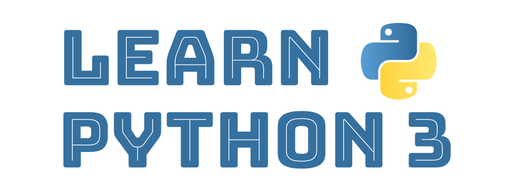
Learn Python 3#
by Ankit Mahato [About]
Version 2022.10
How to read this book?#
This book can be consumed in 3 ways:
Table of Contents#
- Introduction
- Python Fundamentals
- Variables, Objects & Data Types
- Input / Output
- Operators & Expressions
- Errors & Exception Handling
- Control Flow
- Strings
- Strings: Introduction & Creation
- Accessing Characters of a String
- String Operations
- Introduction to String Methods
- Convert Case of Strings
- Check Characters of a String
- Split a String
- Strip Characters from a String
- Check Prefix or Suffix in a String
- Find & Replace Characters in a String
- Traversing a String
- List
- What is a Python List? How to Create a List?
- Accessing Items of a List
- Modifying a List
- Removing Item from a List
- List Operations
- Traversing a List
- Built-in Functions that can be used for a List
- Introduction to List Methods
- Adding Items to a List
- Removing Items from a List
- Counting or Locating Items in a List
- Reversing Items
- Sorting a List
- Copying a List
- Nested List
- List Comprehension
- Sample Programs
- Tuple
- List vs Tuple
- How to Create Tuple?
- What is a Singleton?
- Accessing Items of a Tuple
- Tuples are Immutable
- Tuple Operations
- Traversing a Tuple
- Built-in Functions that can be used for a Tuple
- Locating Items in a Tuple
- Counting the Occurrence of an Item
- New Tuple with Reversed Items
- New Tuple with Sorted Items
- Nested Tuple
- Understanding the Immutable Nature of Tuples
- Dictionary
- What is a Dictionary?
- How to Create a Dictionary
- Accessing Items (Key:Value) of a Dictionary
- Updating a Dictionary
- Removing an Item (Key:Value) from a Dictionary
- Dictionary Operations
- Traversing a Dictionary
- Built-in Functions for a Dictionary
- Creating a Copy of a Dictionary
- Nested Dictionary
- Sample Programs
- Python Standard Library
- File Handling
- User Defined Functions, Modules & Packages
- Python Mini Projects
Introduction#
Introduction to Programming Languages#
In today's digital era, we depend on computers, smartphones and the internet to perform a plethora of tasks, like:
- A mathematical task, such as finding the square root of a number or solving a set of simultaneous equations.
- A text-based task such as reading a document and performing search/replace.
- Streaming and playing multimedia files containing audio and video.
- Using a search engine to find and visit a website.
- Playing an online multiplayer game with friends.
- and many more...
Softwares play an important role as they translate human activity into corresponding machine instructions which are executed to accomplish these tasks.
A software is a collection of programs where each program provides a sequence of instructions specifying how the computer should act.
These instructions have to be provided in machine language or low level language (0s and 1s) that is difficult to read or write for a human being.
This led to the invention of high-level programming languages in which programs can be easily written and managed. The human-readable programs written using high-level languages are converted into computer-readable machine code or bytecode using compilers or interpreters.
There are many high-level programming languages that are currently in wide use.
Some of the popular languages are Java, C, C++, C#, Go, Swift, JavaScript, PHP, Dart, Kotlin and Python.
Introduction to Python#
Guido van Rossum started the development of Python in December 1989. He released the first version (0.9.9) of Python for general public on February 20, 1991.
The language evolved over the next few decades and so did its definition, the current version of which is stated below:
Python is a high-level, interpreted, object-oriented programming language with dynamic semantics.
Let us break down and analyze the above definition to gain a better understanding of Python:
High-level
Python is a high-level programming language which can be used to write a program in natural language (english) making it readable, writable, shareable and manageable.
While developing a Python program one is not required to handle the various components of computer architecture like registers, memory addresses and call stacks which have to be handled if an assembly language or a low-level language is used for development.
Python includes high-level language features like variables, data structures (lists, dictionaries, etc.), objects, expressions, modules, classes, functions, loops, threads, file handling, string handling, error handling and other computer science abstraction concepts.
Interpreted
In traditional programming languages like C or C++, codes are compiled into computer-readable machine code before it can be executed.
Python is an interpreted language where the Python interpreter reads and executes the program line by line.
The process is more time consuming compared to compiled code execution, but allows faster development as one does not have to go through the entire compilation step during testing and debugging. Also, the code can run on any platform as long as it has a valid Python installation (which includes interpreter) as there is no generation of platform dependent binaries.
Object-oriented
Python does not enforce Object-oriented programming (OOP), but completely supports it.
A programmer can define Classes specifying the data in the form of attributes (or properties) and some programming logic in the form of member functions (or methods). Once a class is defined, the user can create an instance of that class which is known as an object.
In Python, everything (int, list, dict, etc.) is an object. We
will cover more about objects in detail in the later sections.
Dynamic Semantics
As Python is an interpreted language in which the code is executed line-by-line, a python statement or expression is evaluated during run-time. This allows dynamic typing (type of a variable can change over its lifetime) and creation of dynamic objects during run-time, which provides more flexibility, usability and fewer lines of code as compared to statically-typed compiled languages like C/C++.
Advantages of Python#
The key advantages of Python are as follows:
1. Easy to Learn
The Python programming language is easy to learn with low technical and conceptual overhead. This makes it an ideal language for beginners to learn programming.
2. Clear Syntax & Fewer Lines of Code
Python's simple and easy to learn syntax increases code readability and leads to fewer lines of code.
A typical task which requires an average of twenty lines of code in C and seven in Java can often be done with just one line in Python.
Also, due to fewer lines of code the chances of making any error is significantly reduced.
3. Open Source
Python is an open source programming language, so anyone can view and contribute to its source code.
4. Portable & Platform Independent
The Python programming language is portable & platform independent as it can work on any Linux, MacOS or Windows device.
5. Standard Library & Python Packages
Python has a rich and extensive Standard Library, a collection of predefined functions for various tasks.
Python programmers also have at their disposal the vast ecosystem of more than 250,000 community contributed libraries in the Python Package Index (PyPI), where one can find a solution to every conceivable task.
6. Web Application Development
Some of the most popular web development frameworks (django, flask, etc.) are written in Python. This coupled with the availablity of packages to connect to any database makes Python a great choice for web application development.
Installing Python in Windows#
Let's start with the Python 3 installation process on Windows operating system.
Step 1: Download Installer
Download the latest Windows installer from the Python Software Foundation website.
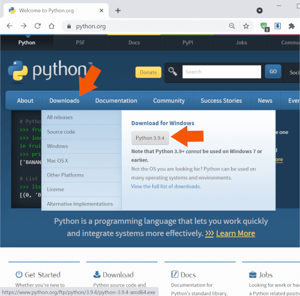
Step 2: Install Python 3
Once the download is complete double-click and run it.
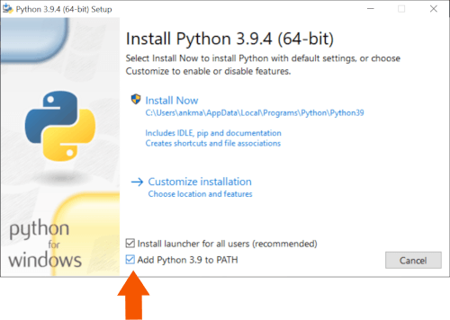
Select the checkbox ✅ Add Python 3.9 to PATH. This will enable you to install python
packages and run python script via command-line.
Hit 🛡️ Install Now and complete the setup.
Step 3: Verify Installation
Once the setup is complete, click on the Start menu and open
Python 3.9 -> IDLE (Python 3.9 64 bit) to launch the Python interpreter.

Python 3.9 is now successfully installed on your computer.

Installing Python in macOS (Apple)#
Let's start with the Python 3 installation process on macOS operating system.
Step 1: Download Installer
Download the latest macOS installer from the Python Software Foundation website.

Step 2: Install Python 3
Once the download is complete double-click and run it.

Hit Continue and complete the setup.
Step 3: Verify Installation
Once the setup is complete, click on the Launchpad -> IDLE to launch the Python interpreter.
Python 3.9 is now successfully installed on your computer.
Execution Modes#
After installing the latest version of the Python interpreter, we can now write and execute some basic Python codes.
There are two ways to execute a Python program:
- Interactive Mode: When the IDLE application is launched, the Python interpreter or the Python shell pops up on the screen. User can interact with the Python interpreter and execute statements (single line or multiline code snippets) directly in this Python shell.
- Script Mode: This is the most commonly used method for executing a Python program.
The entire Python program is written and saved in a file (
.pyextension) which can be executed using the IDLE application.
Interactive Mode of Execution#
Let us execute some basic Python statements and interact with the Python shell.
Launching the Python Shell
To launch the IDLE application click
[Windows Start Menu Button] -> [Python 3.9 Folder] -> [IDLE (Python 3.9 64 bit)].
The Python interpreter or the Python shell will pop-up on the screen.
The version (3.9) of the Python interpreter is displayed at the top of the window followed
by the >>> symbol which indicates that the interpreter is ready to take instructions.
Python commands or statements can be input on this prompt. The input statements are executed instantaneously and any variable assignments are retained as long as the session is not terminated.
Basic Arithmetic
Let us perform some basic arithmetic operations in the interactive mode using an integer number
(2) and a floating-point number (3.5):
>>> 2 + 2
4
>>> 2 * 3.5
7.0
It can be observed that the results of each of the above computations are displayed immediately in the shell.
Storing Values/Results
Instead of immediately displaying the results, they can also be stored in variables using the assignment
symbol (=) as shown below:
>>> a = 2 + 2
>>> b = 2 * 3.5
The values of a and b can be accessed later for future calculations as shown
below:
>>> a
4
>>> b
7.0
>>> a * 5
20
>>> b / 3
2.3333333333333335
Basic String Operation
Interactive mode is not just restricted to basic arithmetic or assignments. Let us join two strings -
"Hello, " and "world!".
>>> "Hello, " + "world!"
'Hello, world!'
The complete functionality of Python is easily accessible to a user via the Interactive Mode.
This makes it convenient for testing and instant execution of small code snippets (single line or few lines of code), a feature not available in compiled languages like C, C++ and Java.
But, the statements cannot be saved for future use and have to retyped for re-execution. This disadvantage is overcome by the use of Python in Script Mode as described in the next section.
Script Mode of Execution#
To write reusable codes, script mode is the most preferred mode of code execution.
File Creation
To create a new file using the IDLE application click [File] -> [New File]

Write a simple Python program as shown below
a = 2 + 2
a
and save the script as example.py (.py file extension for all Python scripts)
using [File] -> [Save As...]
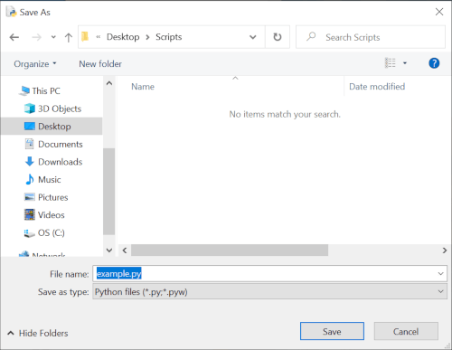
Script Execution
Now run this script using [Run] -> [Run Module].
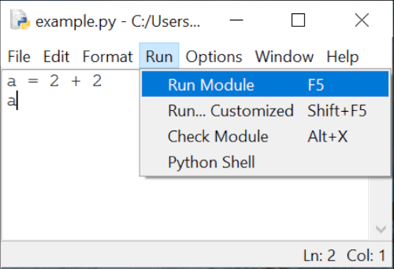
It can be observed that the code has been executed, but no output is displayed on the console (or the standard output) as all outputs have to be explicitly specified when running a code in the script mode.
This can be done by using the print() function which is used in Python scripts to display
output on the output stream. Let us quickly add the print() function in the above code and
execute it.
a = 2 + 2
print(a)
Now, when you run the script you will observe that the value of a, that is 4,
is now displayed on the console.
Python Fundamentals#
Tokens: Introduction#
When a Python code is executed, the Python interpreter reads each logical line and breaks it into a sequence of lexical units.
These lexical units are better known as tokens - the smallest individual units of a program. They are the building blocks of a Python code and can be classified into one of the following categories:
- Keywords : Reserved words that convey special meaning when processed by the Python interpreter.
- Identifiers : Names defined by the programmer to refer to objects that can represent variables, functions, classes, etc.
- Literals : Values specified in the program which belong to exactly one of the Python's built-in data types.
- Delimiters : Symbols that denote grouping, punctuation, and assignment/binding.
- Operators : Symbols that can operate on data and compute results.
Tokens: Keywords#
Keywords are reserved words that have special meaning when processed by the Python interpreter. They are case-sensitive and cannot be used for naming identifiers (class, function, variable or structure names).
The list of keywords in Python are provided below:
True |
False |
import |
from |
as |
None |
and |
or |
not |
in |
is |
try |
except |
finally |
raise |
del |
global |
nonlocal |
lambda |
def |
class |
with |
if |
elif |
else |
pass |
for |
while |
continue |
break |
assert |
return |
yield |
async |
await |
Tokens: Identifiers#
Identifiers are used for defining the names of Python objects such as variables, functions, classes, modules, etc. The naming convention for identifiers is as follows:
- Must begin with a lowercase character (
a-z) or an uppercase character (A-Z) or underscore sign (_). - Followed by any number of letters (
a-z,A-Z), digits (0-9), or underscores (_). - Should not be a keyword.
- No special symbols are allowed like
!,@,#,$,%, etc.
Some points to keep in mind while naming identifiers:
- Identifiers are case-sensitive in nature and any difference in case of any character refers to a
different identifier. e.g.,
lengthandLengthare different identifiers. - Identifiers differing by only underscores are different. e.g.,
unitlengthandunit_lengthare different identifiers.
It is also a good practice (although not compulsory) to follow the following procedure while naming identifiers:
- Identifiers should be named carefully with an emphasis on clarity and readability. For example, in a
program that calculates the area of a rectangle, a good choice for identifier names are -
length,breadthandarea. - Class names should start with uppercase character.
- Identifiers starting with an underscore have special meaning in a program.
- Variable, function and method names should be in lowercase characters, with underscores separating
multiple words like
area_of_square,area_of_triangle, etc.
Tokens: Literals#
Literals are tokens in the source code which represent fixed or constant values. They are often used in assignment statements for initializing variables or in comparison expressions.
The various types of literals available in Python are as follows:
Numeric Literals#
Numeric literals are used for representing numeric values in the source code. They can be of three types - integers, float point numbers and imaginary numbers.
Integer Literals#
Integer literals are numbers without any fractional component.
In Python, integer literals can be written in four positional (base) numeral systems:
i. Decimal or base-10 Integer
A decimal integer literal consists of one or more digits (0-9) and cannot have any zeros
preceding the first non-zero digit, except when the number is 0.
Example base-10 integers:
34
3283298
864
0
092 is not a valid decimal integer literal as a zero precedes the first non-zero digit
9.
ii. Binary or base-2 Integer
A binary integer or base-2 integer begins with 0b or 0B followed by binary
digits 0-1.
For example, 27 can be written as a binary integer literal 0b11011.
iii. Octal or base-8 Integer
An octal integer or base-8 integer begins with 0o or 0O followed by octal
digits 0-7.
For example, 27 can be written as an octal integer literal 0o33.
iv. Hexadecimal or base-16 Integer
A hexadecimal integer or base-16 integer begins with 0x or 0X followed by
digits 0-9 or letters A-F (case insensitive).
For example, 27 can be written as a hexadecimal integer literal 0x1B or
0x1b.
Thus, it can be observed that number 27 can be written in the program as 27
(decimal), 0b11011 (binary), 0o33 (octal) or 0x1B (hexadecimal).
Underscores in Integer Literals
An optional character _ (underscore) is also allowed in an integer literal to group digits
for enhanced readability.
One underscore can occur between digits, and after base specifiers like 0o.
They are ignored while determining the actual numerical value of the literal.
Some valid underscore usages are - 10_00_00_000, 0b_1110_0101,
0x23_123.
Floating Point Literals#
Floating point literals are real numbers present in the source code. They contain fractional component and/or exponential component.
The fractional component includes the digits after the decimal point (.).
Example floating point literals:
3.4
.4
8.
3.4E2
3.4e-2
In the above example, .4 is equivalent to 0.4 and 8. is equivalent
to 8.0.
The exponential component can be identified by the letter e or E followed by an
optional sign (+ or -) and digits (0-9). This exponent is
equivalent to multiplying the real number with the power of 10.
For example, 3.4E2 is equivalent to 3.4 x 10^2 or 340.0, whereas
3.4e-2 is equivalent to 3.4 x 10^-2 or .034.
Imaginary Literals#
To specify complex numbers and perform complex number mathematics, Python supports imaginary literals
which are given by real or integer number followed by the letter j or J which
represents the unit imaginary number.
Example imaginary literals:
3.5j
15.j
12j
.005j
3e100j
3.5e-10j
Points to Note
In Python,
- there is no specialized literal such as a complex literal. A complex number is actually represented
in the program using an expression comprising a real number (integer/float numeric literal) and an
imaginary number (imaginary literal). For example,
1 + 2jconsists of an integer literal (1) and a imaginary literal (2j). - numeric literals do not include the minus sign (
-).-is actually a unary operator it combines with a numeric literal to represent negative numbers. For example, in-3.14the numeric literal is3.14and-is an operator.
Boolean Literals#
The reserved words True and False are also boolean literals which can be used
to specify the truth value in a program.
String Literals#
String literals are texts which can be specified in a variety of ways in Python:
- Single quotes:
'python' - Double quotes:
"python" - Triple quoted:
'''Triple python''',"""Three python""".
Triple quoted strings can also span multiple lines.
Example:
s = "I am a String"
s1 = """A
multiline
String"""
s2 = '''Also a
multiline
String'''
The backslash (\) character can be used in a string literal to escape characters that
otherwise have a special meaning, such as newline, linefeed, or the quote character.
| Escape Sequence | Meaning |
|---|---|
\\ |
Backslash (\) |
\' |
Single quote (') |
\" |
Double quote (") |
\a |
ASCII Bell (BEL) |
\b |
ASCII Backspace (BS) |
\f |
ASCII Formfeed (FF) |
\n |
ASCII Linefeed (LF) |
\r |
ASCII Carriage Return (CR) |
\t |
ASCII Horizontal Tab (TAB) |
\v |
ASCII Vertical Tab (VT) |
Although \' and \" can be used to specify quote characters, Python allows
embedding double quotes inside a single-quoted string ('My name is "Python".') and single
quotes inside a double-quoted string ("Python's World").
String literals also support unicode characters which can be specified using \u escape
sequence followed by the 4 letter unicode.
>>> print("E = mc\u00B2")
E = mc²
In the above example, \u00B2 is the unicode character which represents the 'SUPERSCRIPT
TWO'.
Special Literal#
None is a special literal which is used to denote the absence of value.
It should not be confused with 0 as 0 is an integer literal with a defined
finite value, whereas None implies nothingness.
>>> a = None
>>> a
>>>
In the above example, the Python shell does not display any value of a as it is assigned as
None which has no value.
Collection of Literals#
Python has the provision for specifying a collection of literals in the source code using a special syntax known as "displays".
One can create specialized containers like list, set and dictionary using this syntax.
Some example collection of literals (displays) are provided below:
- List:
a = ['a', 'b', 'c'] - Set:
a = {'a', 'b', 'c'} - Dictionary:
a = {'a':1, 'b':2, 'c':3}
List, set and dictionary will be covered in detail in later chapters.
Tokens: Operators#
Operators are tokens which can be combined with values and variables to create expressions which evaluate to a single value. Python supports a rich set of operators:
+ - * **
/ // % @
<< >>
& | ^ ~
:= < >
<= >= == !=
Each of the above operators are covered in detail in the chapter - Operators.
Tokens: Delimiters#
Delimiters are tokens which are useful for organizing a program and are used in statements, expressions, functions, literal collections, and various other code structures.
They can be classified based on utility as follows:
Grouping#
(), [] and {} are delimiters used for:
- grouping expressions which can be spread across multiple physical lines.
- creating collection of literals like list display, dictionary display, set display.
- creating parenthesized sub-expression having the highest operator precedence (evaluated first) in a complex expression.
Example
days = ['Sunday', 'Monday',
'Tuesday', 'Wednesday',
'Thursday', 'Friday',
'Saturday']
sum_6 = (1 + 2 +
3 + 4 +
5 + 6)
is equivalent to
days = ['Sunday', 'Monday', 'Tuesday', 'Wednesday', 'Thursday', 'Friday', 'Saturday']
sum_6 = (1 + 2 + 3 + 4 + 5 + 6)
Punctuation, Decoration and Annotation#
Tokens in Python which are used for punctuation, decoration and annotation are:
. , :
; @ ->
Assignment/Binding#
The assignment or binding delimiters are used for binding objects to names via assignment statements. The complete list of tokens are provided below:
= += -= *=
/= //= %= **=
@= &= |= ^=
<<= >>=
Except =, the rest of the tokens have an operator followed by = character.
These delimiters are also known as augmented assignment operators as they perform an operation in combination with assignment.
Character Set#
A set of valid characters that a programming language recognizes is known as its character set.
Python is a new age programming language which supports Unicode encoding standard. The default encoding for Python source code is UTF-8 (Unicode Transformation Format – 8-bit) which enables developers to use Unicode characters not only as literals, but also as identifiers.
This makes Python one of the very few programming languages that support multiple languages as shown in the example below:
Code
message = "हिन्दी में print करे"
print(message)
क = 1 # Devanagari Letter KA
ক = 2 # Bengali Letter KA
க = 3 # Tamil Letter KA
ક = 4 # Gujarati Letter KA
print(क + ক + க + ક)
Output
हिन्दी में print करे
10
Blocks and Indentation#
In traditional programming languages like C++ or Java, programs are organised in form of code blocks.
Each code block contains one or more statements which are enclosed between braces - { and
} and are executed sequentially.
A sample C++/Java code is provided below which checks for an input x.
C++
if (x < 10) {
cout << "x is less than 10" << endl;
if (x <= 5) {
cout << "x is less than or equal to 5" << endl;
}
else {
cout << "x is more than 5 but less than 10" << endl;
}
}
else {
cout << "x is not less than 10" << endl;
}
Java
if (x < 10) {
System.out.println("x is less than 10");
if (x <= 5) {
System.out.println("x is less than or equal to 5");
}
else {
System.out.println("x is more than 5 but less than 10");
}
}
else {
System.out.print("x is not less than 10");
}
It can be seen how indentations (tab at the beginning of line) are added (not required by
programming language) to the code to increase readability, which helps in guiding readers through the
code.
Python
Code blocks in Python are inspired by this idea as it makes it easier to understand a Python code.
A block of code is denoted by line indentation, typically 4 spaces (preferred) or a tab. This indentation is used to determine the logical group of statements, with all statements within a group having the same level of indentation.
The corresponding Python code for the above C++/java examples is provided below.
Notice how the code blocks are indented according to the logic.
if x < 10:
print("x is less than 10")
if x <= 5:
print("x is less than or equal to 5")
else:
print("x is more than 5 but less than 10")
else:
print("x is not less than 10")
Comments#
Python supports single-line comments and multi-line comments to enhance code readability via adding documentation.
Single Line Comments#
A single line comment begins with #. Everything between # and the end of line
is ignored by the Python interpreter.
# A single line comment.
a = 1 # assign a
Multiline comments#
A multiline comment begins with ''' or """ and ends with the same.
"""
I am
a multiline
comment.
"""
'''
I am
also a multiline
comment.
'''
As compared to single line comments, multiline comments should begin at the same indentation level corresponding to their code block.
For example,
"""
Begin program
here
"""
if x < 10:
"""
Enter code block when x
is less than 10
"""
print("x is less than 10")
if x <= 5:
"""
Enter code block when x
is less than or equal to 5
"""
print("x is less than or equal to 5")
else:
"""
Enter code block when x
is more than 5 but less than 10
"""
print("x is more than 5 but less than 10")
else:
"""
Enter code block when x
is not less than 10
"""
print("x is not less than 10")
Variables, Objects & Data Types#
What are Objects & Variables?#
A program is a sequence of instructions which often acts on information (data) provided by the user.
The process of creating, storing and manipulating this data helps in the computation of new data or the end result.
Variables are the fundamental building blocks of a program which provide a way to store, access and modify values during the life-cycle of a program.
Each variable has:
- a name (handle),
- a type or data-type (kind of data), and
- a value (actual data).
In traditional programming languages like Java or C++, the type of the variable is pre-defined.
For example, if you want to use the value 1 inside the program, you can store it in a
variable named a of type int.
int a = 1;
This a is synonymous to a box of fixed dimensions (fixed type) holding something (value
1) inside it.

In case we want to change the contents of the box, we can replace it with something similar (same type).
a = 2;

The contents of this box can be replicated and placed in a similar (same type) box:
int b = a;
Multiple boxes can exist, each containing an item having the same value.
int x = 3;
int y = 3;
int z = 3;
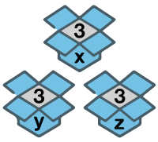
As shown above, the programming languages in which the variables (named boxes) are declared along with their types (size of the boxes) are known as statically typed languages.
The size of these boxes cannot change later in the program until the variable is re-initialized with the same name and different type.
Python is a dynamically-typed language, where every value or data item (of any type like numeric, string, etc.) is an object.
The variable names are just name-tags pointing to the actual object containing data of any type.
As there is no need of any variable declaration in Python before usage, there is no concept of default
value (an empty box or null) which exists in other programming languages.
Whenever a new object is created in Python, it is assigned a unique identity (ID) which remains the same
throughout the lifetime of that object. This ID is the address of the object in memory and the built-in
function id() returns the value of this address.
>>> a = 1
>>> id(a)
140407745943856
>>> a = 2
>>> id(a)
140407745943888
In the above example, the ID of a changes as it points to a new object (2).
>>> b = a
>>> id(b)
140407745943888
Also, when a is assigned to b, instead of creating a new copy, b
points to the same object as a.
Variables & Assignment Statements#
A variable is uniquely identified by a name (identifier) and follows the same naming convention:
- Must begin with a lowercase character (
a-z) or an uppercase character (A-Z) or underscore sign (_). - Followed by any number of letters (
a-z,A-Z), digits (0-9), or underscores (_). - Should not be a keyword.
- No special symbols are allowed like
!,@,#,$,%, etc.
Assignment#
Variables can be bound to a reference of an object (of any type) using assignment statements.
You can create an object (data) and bind it's reference to a variable using equal sign (=):
count = 100 # integer
pi = 3.141 # real number
name = "Python" # string
Here, L-value refers to the assignable variables (count, pi, name)
on the left side of the assignment and R-value refers to the expression on the right side of the
assignment operator that has a value (100, 3.141, "Python").
As variables are just references, you can rebind them to another object of same or different type:
a = 100 # integer
a = 3.141 # real number
a = "Python" # string
Deletion#
The del statement can be used to unbind the reference to an object.
>>> a = 10
>>> del a
>>> a
Traceback (most recent call last):
File "<stdin>", line 1, in <module>
NameError: name 'a' is not defined
Accessing a results in a NameError as the reference (variable) to the object
holding value 10 is deleted.
The object is also automatically cleaned up from the memory if there is no other variable referencing to it (garbage collection).
Multiple Assignment#
In Python, multiple assignment can be used to condense variables which are set to the same value:
>>> x = y = z = 'foo'
>>> x
'foo'
>>> y
'foo'
>>> z
'foo'
Tuple Swapping#
In Python, a temporary variable is not required to swap values of two variables. Values can be directly swapped (tuple swapping) as shown below:
>>> a = 'Hello'
>>> b = 'World'
>>> b, a = a, b
>>> a
'World'
>>> b
'Hello'
Built-in Data Types#
In Python, the type of a data (or value) is not linked to the variable, but to the actual
object which contains it. This type is also known as the object's data type and is used for identifying
the operations that can be performed on the data.
The following built-in data types are available in Python:
- Numeric Types -
int,float,complex,bool - Sequence Types -
list,tuple,str - Set Type -
set - Mapping Type -
dict - Special Type -
None
Often sequence, set and mapping types are also collectively known as iterables as they are a collection of items on which a user can traverse (iterate).
Numeric Types - int, float,
complex, bool#
Numeric data types are used for storing the following types of numbers:
Integer Numbers
Objects holding integer numbers like -1, 0, 200 are of int data type.
Real or Floating-point Numbers
Objects holding real or floating point numbers like -1.1, 3e2, 20.0 are of
float data type.
Complex Numbers
Objects storing complex numbers like 2 + 1j, -3j, -1 + 2J are of type complex.
Each complex number has two parts, the real part which is a numeric integer or floating point literal, and the imaginary part which is an imaginary literal.
Boolean
The boolean data type (bool) is a subtype of int. It stores the evaluated value
of expressions represented as keywords - True (integer value 1) and
False (integer value 0).
Sequence Types - str, list,
tuple#
An ordered collection of items where each item can be accessed using an integer index is known as a sequence. The following three sequence data types are available in Python:
String
A string (str data type) is a sequence of zero or more unicode characters enclosed within a
pair of single (') or double (") quotes.
Some example strings are - "42", 'hello', "python".
List
A list is sequence of items of same or different data types which are enclosed within
brackets - [ ].
Some example lists are - [1, 2, 3], ['abc', 23, 3.14],
['edpunk', 'python'].
Tuple
A tuple is an immutable sequence of items of same or different data types which are enclosed
within parentheses - ( ).
Some example tuples are - (1, 2, 3), ('abc', 23, 3.14),
('edpunk', 'python').
Set Type - set#
A set is an unordered collection of unique items of same of different data types which are
enclosed in curly braces - { }.
Some example sets are - {1, 2, 3}, {'abc', 23, 3.14},
{'edpunk', 'python'}.
Mapping Type - dict#
dict is a mapping data type which stores values in the form of key-value pairs.
It is used for representing data where you can quickly access the value (any data type) corresponding to
a key (any data type except list, set or dict), just like a
dictionary where you can lookup the meaning of a given word.
Keys and corresponding values are separated by colon (:).
The key-value pairs are separated by comma (,) and enclosed within curly braces -
{ }.
Some example dictionaries are - {1: "a", 2: "b", 3: "c"},
{"name": "edpunk", "language": "python"}.
Special Type - None#
None is a special data type which is used to denote the absence of value in an object.
It is neither 0 nor False as these are defined finite values, whereas
None implies nothingness.
Type Checking#
The built-in type() function can be used to fetch the data type of an object.
Examples:
>>> count = 100
>>> type(count)
<class 'int'>
>>> pi = 3.141
>>> type(pi)
<class 'float'>
>>> name = "Python"
>>> type(name)
<class 'str'>
This function can be used along with the is operator in an expression to test whether the
object is of the given type.
>>> count = 100
>>> type(count) is int
True
The in operator can be used along with the type() function to test if the data
type is one of the mentioned types.
# count is of type int or float
>>> type(count) in (int, float)
True
Type Casting#
The process of converting the data type of an object from one type to another is known as Type Casting or Type Conversion.
The two kinds of type casting supported in Python are:
Implicit Type Casting#
The Python interpreter automatically converts the data type without the need of user intervention when evaluating expressions to determine the final data type.
In the below example the final type of c is automatically determined as float
by the Python interpreter.
>>> a = 1 # int
>>> b = 2.0 # float
>>> c = a + b
>>> c
3.0
>>> type(c)
<class 'float'>
Explicit Type Casting#
When the type conversion is explicitly specified by the user using the various built-in functions available in Python, it is known as explicit type casting.
The built-in functions which can be used for explicit type casting are as follows:
1. int()
Creates an int from a bool, float or str containing
integer characters (with or without sign).
>>> int(True)
1
>>> int(2.3)
2
>>> int("2")
2
2. float()
Creates a float from a bool, int or str containing
floating point literals (with or without sign).
>>> float(True)
1.0
>>> float(2)
2.0
>>> float("2.3")
2.3
float() also accepts the following string inputs -
"Infinity""inf""nan"(not a number).
>>> float("Infinity") > 1
True
>>> float("nan")
nan
Floating point literals can also contain the following characters -
., which denotes the fractional part of a number.eorE, which denotes the exponent part of a number.
>>> float("3.14")
3.14
>>> float("10.")
10.0
>>> float("1e100")
1e+100
>>> float("3.14e-10")
3.14e-10
3. str()
Converts any object into a str.
>>> str(2)
'2'
>>> str([1, 2, 3, 4])
'[1, 2, 3, 4]'
4. tuple()
Creates a tuple from an iterable of type str, list,
set or range.
>>> tuple('hello')
('h', 'e', 'l', 'l', 'o')
>>> tuple([1, 2, 3, 4])
(1, 2, 3, 4)
>>> tuple(range(6))
(0, 1, 2, 3, 4, 5)
5. list()
Creates a list from an iterable of type str, tuple,
set or range.
>>> list('hello')
['h', 'e', 'l', 'l', 'o']
>>> list({1, 2, 3, 4})
[1, 2, 3, 4]
>>> list(range(6))
[0, 1, 2, 3, 4, 5]
6. set()
Creates a set from an iterable of type str, tuple,
list or range.
>>> set('hello')
{'o', 'e', 'l', 'h'}
>>> set([1, 2, 3, 4])
{1, 2, 3, 4}
>>> set(range(6))
{0, 1, 2, 3, 4, 5}
Mutable & Immutable Data Types#
Immutable Data Types#
A data type is said to be immutable when the value of an object of that type cannot be modified.
The following data types are immutable:
intfloatcomplexbooltuplestrNone
You might be wondering if some of the above types are immutable then how are we able modify the values of variables?
In case of variable re-assignment, the original objects are not modified, but new objects (with new values) are created in a new memory location and are bound to the variables. The object containing the old value is destroyed if no other variable references it.
Let us take an example,
>>> a = 1
>>> id_a = id(a)
>>> a = 2
>>> id_a2 = id(a)
>>> id_a == id_a2
False
You can witness in the above example how the object containing the value 1 is different from
the object containing the value 2, and a points to the latest object.
Sequence data types like strings and tuples are also immutable, i.e., no modifications are permitted to any item once it is created and any attempt to do so raises an error.
>>> s = "Hello"
>>> s[1] = "P"
Traceback (most recent call last):
File "<stdin>", line 1, in <module>
TypeError: 'str' object does not support item assignment
>>> t = (1, 2, 3)
>>> t[1] = 0
Traceback (most recent call last):
File "<stdin>", line 1, in <module>
TypeError: 'tuple' object does not support item assignment
Although, similar to numeric types the variables can be re-assigned to new sequences.
>>> s = "Hello"
>>> id_s = id(s)
>>> s = "Help"
>>> id_s2 = id(s)
>>> id_s == id_s2
False
>>> t = (1, 2, 3)
>>> id_t = id(t)
>>> t = (0, 2, 3)
>>> id_t2 = id(t)
>>> id_t == id_t2
False
Mutable Data Types#
In Python, the following data types are mutable, i.e., any modification does not create a new object but modifies the existing object:
listsetdict
Let us take a list and modify its contents.
>>> l = [1, 2, 3]
>>> id_l = id(l)
>>> l[0] = 0
>>> l
[0, 2, 3]
>>> id_l2 = id(l)
>>> id_l == id_l2
True
Let us take an example of a dictionary and add a new key:value pair.
>>> d = {"a": "apple", "b": "boy"}
>>> id_d = id(d)
>>> d["c"] = "cat"
>>> d
{'a': 'apple', 'b': 'boy', 'c': 'cat'}
>>> id_d2 = id(d)
>>> id_d == id_d2
True
Let us take an example of a set and add new item.
>>> s = {"apple", "bat"}
>>> id_s = id(s)
>>> s.add("cat")
>>> s
{'cat', 'apple', 'bat'}
>>> id_s2 = id(s)
>>> id_s == id_s2
True
In the above examples, the id of the objects (list, dict,
set) do not change, which implies that no new objects are created and the original objects
are modified.
Input / Output#
How to Accept User Input#
input() function is used to accept new input data from the user.
When this function is encountered in the code, the python interpreter waits for the user to type a response which is read as a string and assigned to a variable.
>>> name = input()
edpunk
>>> name
'edpunk'
The function also has an optional string argument which is used as a prompt message for the user.
>>> name2 = input("Enter name: ")
Enter name: EdPunk
>>> name2
'EdPunk'
User input can be converted into integer or floating point numbers using the type conversion functions
int() and float().
>>> num = int(input("Enter n: "))
Enter n: 10
>>> type(num)
<class 'int'>
>>> num
10
>>> pi = float(input("Enter pi: "))
Enter pi: 3.14
>>> type(pi)
<class 'float'>
>>> pi
3.14
Displaying Output#
The built-in print() function is used to display an output (value of variables, expressions,
etc.) on the standard output.
Let us go through a program which computes the area of a rectangle and displays it:
Code
length = 10
breadth = 5
area = length * breadth
print("Area:", area)
Output
Area: 50
print() function can also be used to output the value of multiple objects when they are
provided as arguments to the function.
Code
a = 2 + 2
b = 2 * 3.5
print(a, b)
Output
4 7.0
In the above code, the values of a and b are separated by a blank space (the
default value of sep).
This property can be modified by providing any user defined separator using the sep option.
Let us modify the code and provide "," as the separator.
Code
a = 2 + 2
b = 2 * 3.5
print(a, b, sep=",")
Output
4,7.0
When expressions are provided as arguments to the print() function, output is the evaluated
value of those expressions.
For example,
Code
print(2 + 2)
print(2 * 3.5)
print("Hello, " + "world!")
Output
4
7.0
Hello, world!
In the above code snippet, each print() function invocation creates a new line of output.
This is because end parameter has the newline character ('\n') as the default
value in the print() function.
This can be modified by the user as shown below:
Code
print(2 + 2, end=",")
print(2 * 3.5, end=";")
print("Hello, " + "world!")
Output
4,7.0;Hello, world!
Note
All non-keyword arguments or expressions are converted to strings and written to the output stream by the
print() function. They are separated by sep and followed by end.
An empty print() invocation writes end parameter (an empty line as
end defaults to the newline character '\n').
Operators & Expressions#
Introduction to Operators#
Operators are symbols that perform a single simple task or operation on one or more values resulting in a single evaluated value.
The values on which these operators are applied are called operands.
Unary Operators#
Unary operators are applied on a single operand positioned on right side of the operator.
Following are some unary operators available in Python:
+(plus): The unary+operator does not change the value of the operand.-(minus): The unary-operator changes the sign of the operand.~(bitwiseNOT): The unary~results in the bit-wise inversion of the integer operand. The bit-wise inversion ofxis defined as-(x+1).
>>> x = 5
>>> -x
-5
>>> +x
5
>>> ~x
-6
Binary Operators#
Binary operators are applied on two operands.
For example, arithmetic operators (+, –, *, /)
evaluate the result of mathematical computation of two values.
Operators in Python#
A rich set of operators are available in Python which can be categorized as follows:
- Arithmetic Operators -
+,–,*,/,%,**,// - Relational Operators -
==,!=,>,>=,<,<= - Assignment Operators -
+=,-=,*=,/=,%=,**=,//= - Logical Operators -
not,or,and - Identity Operators -
is,is not - Membership Operators -
in,not in - Bitwise and Shift Operators -
&,|,^,~,<<,>>
Arithmetic Operators#
Arithmetic operations can be performed in Python using the following arithmetic operators:
Addition
The + operator adds the values of numeric operands.
>>> 2 + 3
5
>>> 2 + 3.0
5.0
In case the operands are of type str, list or tuple, the
+ operator concatenates these two sequences or strings.
>>> 'edpunk' + 'python'
'edpunkpython'
>>> ["ed", "punk"] + ["python", ]
['ed', 'punk', 'python']
Subtraction
The - operator subtracts the value of operand on right from the value of operand on left.
>>> 2 - 3
-1
Multiplication
The * operator multiplies the values of numeric operands.
>>> 2 * 3
6
In case the operands are of type str, list or tuple, the
* operator returns a sequence or string self-concatenated the specified number of times.
>>> "python" * 3
'pythonpythonpython'
>>> ['ed', 'py'] * 3
['ed', 'py', 'ed', 'py', 'ed', 'py']
Division
The / operator divides the value of operand on left by the value of operand on right and
returns the real number quotient.
>>> 6 / 2
3.0
>>> 5 / 2
2.5
Floor Division
The // operator divides the value of operand on left by the value of operand on right and
returns the integer quotient.
>>> 5 // 2
2
Modulus
The % operator divides the value of operand on left by the value of operand on right and
returns the remainder.
>>> 5 % 2
1
Exponent
The ** operator raises the left operand to the power of the right operand.
>>> 5 ** 2
25
Relational Operators#
Relational operators are useful for comparing the values of the operands to determine their relationship. Following relational operators are available in Python:
Equals to
The == operator returns True if the value of operand on left is same as the
value of operand on right.
>>> 2 == 2
True
>>> 2 == 3
False
In case of sequence operands like str, list or tuple, the result
is True if both the sequences are exactly the same.
>>> "python" == "python"
True
>>> "pypi" == "python"
False
>>> [1, 2, 3] == [1, 2, 3]
True
As a sequence is an ordered collection of items, so the order in which the items are positioned is very important.
>>> [2, 1, 3] == [1, 2, 3]
False
Not equal to
The != operator returns True if the value of operand on left is not equal to
the value of operand on right.
>>> 2 != 2
False
>>> 2 != 3
True
>>> 'py' != 'oy'
True
>>> [2, 1, 3] != [1, 2, 3]
True
>>> [1, 2, 3] != [1, 2, 3]
False
Greater than
The > operator returns True if the value of operand on left is greater than the
value of operand on right.
>>> 3 > 2
True
>>> 2 > 2
False
In case of strings operands, > operator perform comparison according to the Unicode code
point (integer) of each character one-by-one.
The Unicode code point of a character can be obtained using the ord() function in Python.
The code point of first character of both operands are compared. In case they are equal, the code point of next character of both operands are compared and the process continues.
For example,
>>> "python" > "Python"
True
The code point of "p" (112) is greater than the code point of "P"
(80). As 112 is greater than 80 the expression evaluates to
True.
Let us take another example:
>>> "pYthon" > "python"
False
The code point of first character is same (112), so the next set of characters are compared.
The code point of "Y" (89) is not greater than the code point of
"y" (121) so the expression evaluates to False.
If two string operands p and q are of unequal lengths
(len(p) < len(q)) and p is a substring of q such that
q = pt where t is any string of length greater than 0, then q > p
returns True.
>>> "python" > "py"
True
In case of sequence operands like list or tuple, the items are compared
one-by-one starting from index 0.
>>> ["p","py","PY"] > ["p","Py","PY"]
True
>>> [1, 3] > [1, 2]
True
>>> [1, 3, 4] > [1, 2]
True
In the above examples, "py" is greater than "Py" and 3 is greater
than 2 respectively.
If two sequences are of unequal lengths and the smaller sequence is the starting subsequence of the larger one, then the larger sequence is considered greater than the smaller one.
>>> [1, 2, 4] > [1, 2]
True
Greater than or equal to
The >= operator returns True if the value of operand on left is greater than or
equal to the value of operand on right.
>>> 3 >= 3
True
>>> 2 >= 3
False
In case of sequence operands (str, list, tuple), the comparison
operation performed is along the same lines as the > operator discussed above.
>>> "python" >= "Python"
True
>>> "python" >= "python"
True
>>> ["py", "py", "PY"] >= ["py", "Py", "PY"]
True
>>> [1, 2] >= [1, 2]
True
>>> [1, 2, 4] >= [1, 2]
True
Less than
The < operator returns True if the value of operand on left is less than
the value of operand on right.
>>> 2 < 3
True
>>> 3 < 3
False
In case of sequence operands (str, list, tuple), the comparison
operation performed is along the same lines as the > operator discussed above.
>>> "file" < "Pile"
False
# f(102) is > P(80)
>>> "py" < "python"
True
>>> ["Py", "PY"] < ["py", "PY"]
True
>>> ['a', 2] < ['a', 3]
True
>>> [1, 2] < [1, 2, 4]
True
Less than or equal to
The <= operator returns True if the value of operand on left is lesser
than or equal to the value of operand on right.
>>> 2 <= 3
True
>>> 3 <= 3
True
In case of sequence operands (str, list, tuple), the comparison
operation performed is along the same lines as the > operator discussed above.
>>> "file" <= "Pile"
False
# f(102) is > P(80)
>>> "py" <= "python"
True
>>> ["Py", "PY"] <= ["py", "PY"]
True
>>> ['a', 3] <= ['b', 2]
True
>>> [1, 2] <= [1, 2, 4]
True
Assignment Operators#
The assignment symbol (=) serves as a delimiter between the name and value in an assignment
statement.
It binds (or rebinds) a value (data, variable, expression) on the right to the target variable on the left.
>>> x = 1
>>> x
1
>>> y = x
>>> y
1
>>> y = "python"
>>> y
'python'
Binary operators can be combined with the assignment symbol to create Augmented Assignment Operators.
These operators perform the binary operation on the two operands and assign the result to the original target (left operand).
If <op> is a binary operator, then the expression a <op>= b
containing the augmented assignment operator is equivalent to a = a <op> b.
+=
The += operator adds a value (right operand) to the variable (left operand) and assigns the
result to that variable.
>>> a = 2
>>> a += 3
>>> a
5
>>> x = "hello"
>>> y = "world"
>>> x += y
>>> x
'helloworld'
-=
The -= operator subtracts a value (right operand) from the variable (left operand) and
assigns the result to that variable.
>>> a = 3
>>> a -= 2
>>> a
1
*=
The *= operator multiplies a value (right operand) to the variable (left operand) and
assigns the result to that variable.
>>> a = 3
>>> a *= 2
>>> a
6
>>> x = "hi"
>>> x *= 3
>>> x
'hihihi'
/=
The /= operator divides the variable (left operand) by a value (right operand) and assigns
the result to that variable.
>>> a = 4
>>> a /= 2
>>> a
2.0
//=
The //= operator floor divides the variable (left operand) by a value (right operand) and
assigns the result to that variable.
>>> a = 5
>>> a //= 2
>>> a
2
**=
The **= operator raises the variable (left operand) to a power (right operand) and assigns
the result to that variable.
>>> a = 4
>>> a **= 2
>>> a
16
%=
The %= operator computes modulus of the variable (left operand) and a value (right operand)
and assigns the result to that variable.
>>> a = 4
>>> a %= 3
>>> a
1
Logical Operators#
Expressions using logical operators evaluate to a boolean value (True or False)
based on the logical state of the operands.
Logical State of Operands#
In Python, all values except 0, None, False, "",
'', (), [], {} have their logical state as
True.
bool() built-in function can be used to determine the logical state of literals, variables
or expressions.
The logical state of the following literals is False.
>>> bool(False)
False
>>> bool(0)
False
>>> bool([])
False
>>> bool(None)
False
>>> bool("")
False
>>> bool([])
False
>>> bool(())
False
>>> bool({})
False
Some example literals having boolean state as True are provided below.
>>> bool(True)
True
>>> bool(1)
True
>>> bool(2.0)
True
>>> bool(100)
True
>>> bool("python")
True
>>> bool(["py", "thon"])
True
not
The logical state of an operand can be reversed (False to True, and vice versa)
using the logical not operator.
>>> n = 5
>>> bool(n)
True
>>> bool(not n)
False
or
The logical or operator returns True if the logical state of any of the two
operands is True.
>>> True or False
True
>>> bool(1 or 0)
True
>>> False or False
False
and
The logical and operator returns True if the logical state of both the operands
is True.
>>> True and True
True
>>> True and False
False
>>> bool(10 and 20)
True
>>> bool(1 and 0)
False
Identity Operators#
We have already witnessed how Python treats every value or data item as an object.
The relational operator == can be used to test whether the operands contain the same value.
>>> n = 1
>>> n2 = 1
>>> n == n2
True
This operator however does not check if both the operands are referring to the same object or different objects.
The identity operators is and is not are used to test whether two objects have
the same or different identity (pointing to the same location in memory) respectively.
a is b is equivalent to id(a) == id(b), where id() is the built-in
function which returns the identity of an object.
>>> n = 1
>>> n2 = 1
>>> n is n2
True
In the above example, both variables n and n2 point to that same memory
location (same object).
>>> l = [1, 2, 3]
>>> l2 = [1, 2, 3]
>>> l == l2
True
>>> l is l2
False
In the above example, both lists l and l2 although contain items with same
values, are actually two different objects occupying different memory locations.
Membership Operators#
The operators in and not in test whether a value is present or not present in
an iterable (string, list, tuple, set, dictionary).
>>> 1 in [1, 2, 3]
True
>>> "ed" in ["ed", "py", "hi"]
True
>>> "ed" in ("ed", "py", "hi")
True
>>> 'ed' in {'ed': 1, 'py': 2}
True
>>> "pen" not in ["pencil", "ink"]
True
>>> "pen" not in ["pen", "ink"]
False
Expressions#
Literals (constants), identifiers (variables) and operators can be combined to form an expression which always evaluates to a single value.
For example, 40 + marks is an expression containing a literal (40), a variable
(marks) and an operator (+).
Some valid expressions are provided below:
10a-aa - 10a + b4.0 * 3.5a == bc in da is T"Hello" + "World"15 - a*43*num + 9/4 - 10%count**2
As shown above, standalone literals (like 10) and variables (like a) are
considered as expressions, but standalone operators are not expressions.
Chained Expression#
Comparison operators can be chained together in Python.
For example, lower <= age <= upper is a valid chained expression which is
equivalent to the expression -
lower <= age and age <= upper.
If a, b, c, …, y, z are expressions and
op1, op2, …, opN are comparison operators, then the chained
expression a op1 b op2 c ... y opN z is equivalent to
a op1 b and b op2 c and ... y opN z.
Conditional Expression#
Python does not have ternary operators (?:) like other programming languages. Hence, the
keywords if and else are used to create conditional expressions which
evaluates to a value based on the given condition.
For example,
var = t_val if cond else f_val
If the above condition cond evaluates to True, then the variable
var is assigned t_val, else it is assigned f_val.
>>> value = 1 if 2 > 3 else -1
>>> value
-1
Operator Precedence with Examples#
While studying mathematics in middle school, we came across the BODMAS (Bracket, Of,
Division, Multiplication, Addition, and Subtraction) rule which helps us in understanding how
mathematical expressions are computed in the presence of multiple operators (of,
x, /, +, -).
In Python, we have a large number of operators and a similar rule to determine the order of evaluation of an expression. This is known as operator precedence where the operator with higher precedence is evaluated before the operator with lower precedence in an expression.
The table below presents the precedence of operators in Python from highest to lowest. Operators in the same row have the same precedence, so in such cases the expression is evaluated from left to right.
| Operator | Description |
|---|---|
(expressions...) |
Parenthesized expression (Group) |
** |
Exponentiation |
+x, -x, ~x |
Unary positive, Unary negative, Bitwise NOT |
*, @, /, //, % |
Multiplication, Matrix multiplication, Division, Floor division, Remainder |
+, - |
Addition, Subtraction |
<<, >> |
Shifts |
& |
Bitwise AND |
^ |
Bitwise XOR |
| |
Bitwise OR |
in, not in, is, is not,
<, <=, >, >=, !=,
==
|
Membership, Identity & Comparisons |
not x |
Boolean NOT |
and |
Boolean AND |
or |
Boolean OR |
:= |
Assignment expression |
Exercises#
Example 1
Evaluate the expression
15 - 2 * 4
Solution
Step: * has higher precedence over -15 - 2 * 4
=
15 - 8
= 7
Example 2
Evaluate the expression
15 - 2 + 4
Solution
Step: - and + have the same order of precedence so the expression is evaluated
left to right15 - 2 + 4
= 13 + 4
= 17
Example 3
Evaluate the expression
15 - (2 + 4)
Solution
Parantesized expression (...) has the highest precedence so + is evaluated
first15 - (2 + 4)
= 15 - 6
= 9
Example 4
Evaluate the expression
3 * 2 + 9 / 4 - 10 % 2 ** 2
Step 1
** takes precedence3 * 2 + 9 / 4 - 10 % 2 ** 2
=
3 * 2 + 9 / 4 - 10 % 4
Step 2
*, / and % have the same precedence so they are evaluated left to
right.3 * 2 + 9 / 4 - 10 % 4
= 6 + 2.25 - 2
Step 3
+ and - evaluation6 + 2.25 - 2
= 6.25
Example 5
Evaluate the expression
20 / 4 // 2 * 2 - 4 + 20
Step 1
*, /, // and % have the same precedence so they are
evaluated left to right.20 / 4 // 2 * 2 - 4 + 20
=
5 // 2 * 2 - 4 + 20
= 2 * 2 - 4 + 20
= 4 - 4 + 20
Step 2
+ and - evaluation4 - 4 + 20
= 20
Example 6
Evaluate the expression
not 6 <= 4 and 3 ** 3 > 12 / 3
Step 1
** takes precedencenot 6 <= 4 and 3 ** 3 > 12 / 3
=
not 6 <= 4 and 27 > 12 / 3
Step 2
/ is next in line of precedencenot 6 <= 4 and 27 > 12 / 3
=
not 6 <= 4 and 27 > 4
Step 3
Comparison operators are next in line of precedencenot 6 <= 4 and 27 > 4
=
not False and True
Step 4
Boolean NOT is evaluatednot False and True
= True and True
Step 5
Boolean AND is evaluatedTrue and True
= True
Errors & Exception Handling#
Error Types#
A program contains "bug(s)" when it is unable to execute or produces an output which is different from what is expected. These bugs are generally introduced by a programmer unknowingly.
The process of identifying and eliminating these bugs or errors is known as debugging.
The three major types of errors are:
- Syntax Error
- Runtime Error
- Logical Error
Syntax Error#
Syntax error occurs when the program contains any statement that does not follow the prescribed Python rules or syntax which makes it difficult for the Python interpreter to parse (understand) and execute it.
Some common syntax errors are:
- Missing/Misspelled keyword
- Missing colon or brackets
- Empty block
- Incorrect position of keyword
- Incorrect block indentation
Script Mode#
When a code containing syntactically incorrect statement is executed using script mode via IDLE, an error dialog box is displayed.
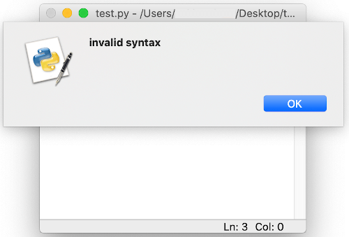
On closing the dialog box, the incorrect part of the code, the potential cause of error, is highlighted in red.
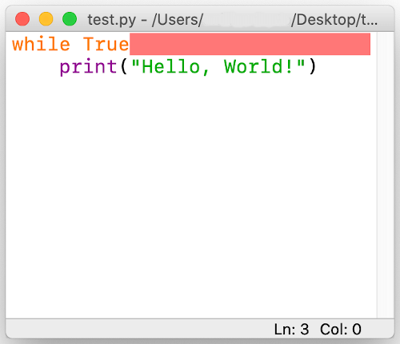
This error has to be rectified to execute the program correctly.
Interactive Mode#
When a syntactically incorrect statement is executed in the Python console (interactive mode), the Python
interpreter displays it and also adds a little arrow (^) pointing at the entry point or
token where the error was detected.
Example
>>> while True print('Hi!')
File "<stdin>", line 1
while True print('Hi!')
^
SyntaxError: invalid syntax
In the above example there is a syntax error with ^ pointing to print function
which the parser is unable to understand as there is a missing : (colon) after
True.
Runtime Error#
A runtime error occurs when the program is terminated prematurely by the Python interpreter as it is unable to execute a statement although it is correct syntactically.
Some runtime error examples are:
- ImportError: Raised when the
importstatement has trouble loading a module or any definition from a module. - IOError: Raised when the interpreter is not able to open the file specified in the program.
- ZeroDivisionError: Raised when a number is divided or mod by zero.
- NameError: Raised when an identifier is encountered which has not been defined.
- ValueError: Raised when an argument or operand is of required data type, but has undesired value.
- IndexError: Raised when the provided index in a sequence (string, list, tuple, etc.) is out of range.
- KeyError: Raised when a dictionary key is not found in the set of existing keys.
- TypeError: Raised while performing an operation on incompatible types.
- IndentationError: Raised when the indentation of a statement or code block is incorrect.
Runtime Error Examples#
ZeroDivisionError
n = 100
d = 0
print(n/d)
Traceback (most recent call last):
File "/Users/name/Desktop/test.py", line 3, in <module>
print(n/d)
ZeroDivisionError: division by zero
NameError
n = 100
print(d)
Traceback (most recent call last):
File "/Users/name/Desktop/test.py", line 2, in <module>
print(d)
NameError: name 'd' is not defined
KeyError
d = {1: "1st", 2: "2nd"}
print(d[3])
Traceback (most recent call last):
File "/Users/name/Desktop/test.py", line 2, in <module>
print(d[3])
KeyError: 3
TypeError
n =1
s = "a"
tot = n + s
Traceback (most recent call last):
File "/Users/name/Desktop/test.py", line 3, in <module>
tot = n + s
TypeError: unsupported operand type(s) for +: 'int' and 'str'
Logical Error#
Logical error or Semantic error is caused when the issue lies in the underlying meaning of the code which leads to an incorrect output.
As compared to syntax or runtime error there is no termination of the program.
Debugging a logical error requires inspection of the entire code as no guiding error message is displayed.
Example#
Let us write a program to calculate the average of two numbers
n = 10
m = 20
avg = n + m / 2
print("Average:", avg)
On executing the script the result is
Average: 20.0
This is incorrect as there is a logical error in the code.
Since / has a higher precedence over +, m / 2 is being computed
first.
We can modify the code to get rid of the logical error.
n = 10
m = 20
avg = (n + m) / 2
print("Average:", avg)
On executing the script, we now obtain the correct result
Average: 15.0
Exceptions#
We have witnessed that even if a program is syntactically correct, its execution may lead to a run-time error.
This error detected during execution is known as an exception which is an object created by the Python interpreter containing information regarding the error like type of error, file name and the location of the error (line number, token) in the program.
Some of the built-in exceptions that are raised by the Python interpreter are - ImportError,
ZeroDivisionError, NameError, ValueError,
IndexError, KeyError, TypeError and
IndentationError.
Apart from the Python interpreter, a programmer can also trigger and raise an exception (along with a
custom message) in the code using raise or assert statement.
raise#
The raise statement can be used to throw an exception in a program. The exception may or may
not contain the custom error message (recommended).
Let us consider a program which accepts two numbers (a and b) from the user and
prints the result a/b.
Code
a = int(input("Enter a: "))
b = int(input("Enter b: "))
print("a/b =", a/b)
Output
Enter a: 10
Enter b: 0
Traceback (most recent call last):
File "/Users/name/test.py",
line 3, in <module>
print("a/b =", a/b)
ZeroDivisionError: division by zero
It can be observed that the Python interpreter raises a ZeroDivisionError when the value of
b is entered as 0.
Now we can modify the above code to raise an exception for such scenarios.
Code
a = int(input("Enter a: "))
b = int(input("Enter b: "))
if b==0:
raise Exception()
print("a/b =", a/b)
Output
Enter a: 10
Enter b: 0
Traceback (most recent call last):
File "/Users/name/test.py",
line 4, in <module>
raise Exception()
Exception
An exception is raised, but it is not helpful.
Let us add some custom error message.
Code
a = int(input("Enter a: "))
b = int(input("Enter b: "))
if b==0:
raise Exception("b is zero")
print("a/b =", a/b)
Output
Enter a: 10
Enter b: 0
Traceback (most recent call last):
File "/Users/name/test.py",
line 4, in <module>
raise Exception("b is zero")
Exception: b is zero
We can also raise any specific type of error as per the program logic as shown below:
Code
a = int(input("Enter a: "))
b = int(input("Enter b: "))
if b==0:
raise ValueError("The value of b cannot be zero")
print("a/b =", a/b)
Output
Enter a: 10
Enter b: 0
Traceback (most recent call last):
File "/Users/name/test.py",
line 4, in <module>
raise ValueError("The value of b cannot be zero")
ValueError: The value of b cannot be zero
assert#
An assert statement is often used during code development to act like a safety valve which
notifies the programmer in case the test expression is evaluated as False.
If the test expression’s value is True, the code execution continues normally.
An AssertionError is raised if the value is False.
Code
a = 3
b = 4
assert a == b
c = 5
Output
Traceback (most recent call last):
File "/Users/name/test.py",
line 3, in <module>
assert a == b
AssertionError
The statement also allows for a message to be attached to the AssertionError.
Code
a = 3
b = 4
assert a == b, "a is not equal to b"
c = 5
Output:
Traceback (most recent call last):
File "/Users/name/test.py",
line 3, in <module>
assert a == b, "a is not equal to b"
AssertionError: a is not equal to b
Exception Handling#
Exception handling is the process of properly handling an exception which can potentially crash a program during execution.
When an error occurs, the program throws an exception.
The runtime system attempts to find an exception handler, a block of code that can handle a particular type of error. Once located, the suitable exception handler catches the exeception and executes the code block which can attempt to recover from the error. In case the error is unrecoverable, the handler provides a way to gently exit the program.
The try statement in Python specifies the exception handlers and/or cleanup code for a code
block.
The various parts of a try statement are:
tryblock: The block of statements within which an exception might be thrown.exceptclause(s): One or more exception handlers. Eachexceptclause handles a particular type of exception. In case an exception of a particular type occurs in thetryblock, the correspondingexceptclause code block is executed.elseclause: An optionalelseclause can also be included after the lastexceptblock. In case no exception is raised, none of theexceptblocks are executed. In this case, theelsecode block is executed.finallyclause: An optionalfinallyclause can be added at the end of the try statement which includes a block of statements that are executed regardless of whether or not any error occured inside the try block. This block is usually setup for code cleanup and closing all open file objects.
Here's the general form of these statements:
try:
[code block]
except [exception1 [as identifier1]]:
[exception code block 1]
except [exception2 [as identifier2]]:
[exception code block 2]
...
...
else:
[code block executes if no error]
finally:
[code block always executed]
Control Flow#
Introduction to Control Flow#
A simple Python program can be treated as a block of code where each statement is executed by the Python interpreter in a sequential order from top to bottom.
But, in real world we would like to have some control over the execution of code such as:
- skip or execute a block (set of statements) based on certain conditions
- execute a block repeatedly
- redirect execution to another set of statements
- breaking up the execution
This control over the flow of execution is provided by Control Flow Statements.
They can be categorized as:
- Sequential
- Selection
- Iteration/Repetition
- Jump
- Procedural Abstraction - A sequence of statements are referenced as a single function or method call
- Recursion - Calling a method/function in the same method/function
- Exception Handling
Sequential Flow#
By default the code statements in Python are executed in Sequential order.
The below flow chart demonstrates how 3 statements are executed in a sequential order.
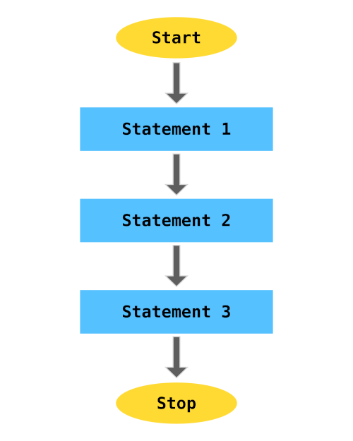
For example,
a = 2
b = 3
c = a*b
print(c)
The above code will be executed in the following sequential order:

Selection Statements: if .. else#
Selection statements, also known as Decision making statements, control the flow of a program based on
the outcome of one or many test expression(s). If the condition is satisfied (True) then
the code block is executed. There is also a provision to execute another code block if the condition is
not satisfied.
This process can be demonstrated using the below flowchart:
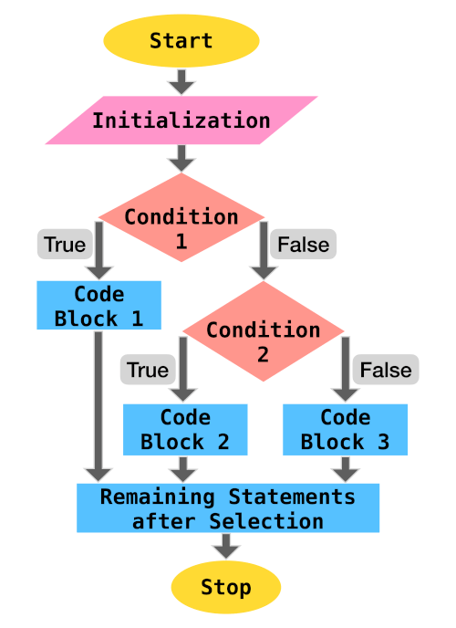
Python supports if compound statement which provides this control. The if
statement comprises:
ifkeyword followed by the test expression, a colon:and an indented block of code which gets executed if the condition is satisfied- (optional) one or many
elifclause followed by their test conditions and their corresponding code blocks - (optional)
elseclause and the corresponding code block which gets executed if none of the above conditions (if,elif) are satisfied
An example if statement is provided below:
'''
age - age of loan applicant
emp - is employed (bool)
cscore - credit scrore of applicant
'''
result = None
if age < 26 and not emp:
result = "Loan rejected"
elif age > 35 and cscore < 600:
result = "Loan rejected"
else:
result = "Loan approved"
print(result)
The control flow view of the above code is:

Examples#
Let us go through some programming problems which utilize selection statements.
1. Absolute Value
Write a program to output the magnitude of difference between two numbers using conditional statement.
Code
n1 = int(input("Enter 1st number: "))
n2 = int(input("Enter 2nd number: "))
if n1 > n2:
diff = n1 - n2
else:
diff = n2 - n1
print("The difference of", n1, "and", n2, "is", diff)
Output
Enter 1st number: 12
Enter 2nd number: 15
The difference of 12 and 15 is 3
2. Sorting 3 Numbers
Write a program to accept 3 numbers from the user and print them in ascending order of value.
Code
a = int(input("Enter 1st number: "))
b = int(input("Enter 2nd number: "))
c = int(input("Enter 3rd number: "))
if b < a:
# Swapping the values of a and b
a, b = b, a
if c < b:
b, c = c, b
if b < a:
a, b = b, a
print("The numbers in sorted order:", a, ",", b, ",", c)
Output
Enter 1st number: 9
Enter 2nd number: 2
Enter 3rd number: 6
The numbers in sorted order: 2 , 6 , 9
3. Divisibility
Write a program to accept two numbers and test if the first number is divisible by the second number.
Code
a = int(input("Enter 1st number: "))
b = int(input("Enter 2nd number: "))
if a % b == 0:
print(a, "is divisible by", b)
else:
print(a, "is not divisible by", b)
Output
Enter 1st number: 9
Enter 2nd number: 2
9 is not divisible by 2
Enter 1st number: 9
Enter 2nd number: 3
9 is divisible by 3
Iteration: for#
Iteration statements, also known as Looping statements, allow repeated execution of a code block.
Python provides for and while statements to perform iteration.
The for statement can be used to iterate over the items of a sequence (list,
string, tuple, range). It can also be used to iterate over
unordered sequences like set and dict.
This process can be demonstrated using the below flowchart:
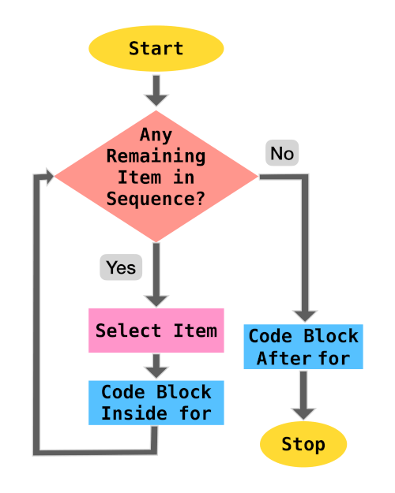
Let us go through some code examples to demonstrate how for statement can be used to iterate
over sequences.
List Iteration#
Code
cars = ["Hyundai", "Honda",
"Ford", "Toyota",
"BMW", "Volkswagen"]
for make in cars:
print(make)
Output
Hyundai
Honda
Ford
Toyota
BMW
Volkswagen
Tuple Iteration#
Code
cars = ("Hyundai", "Honda",
"Ford", "Toyota",
"BMW", "Volkswagen")
for make in cars:
print(make)
Output
Hyundai
Honda
Ford
Toyota
BMW
Volkswagen
String Iteration#
Code
name = "python"
for char in name:
print(char)
Output
p
y
t
h
o
n
Range Iteration#
The range type represents an immutable sequence of numbers that is usually used in for loops
for looping a certain number of times. range object always take the same (small) amount of
memory, no matter the size of the range it represents, which is an advantage over a regular
list or tuple.
Syntax: range(stop) orrange(start, stop[, step])
>>> range(10)
range(0, 10)
>>> list(range(10))
[0, 1, 2, 3, 4, 5, 6, 7, 8, 9]
>>> list(range(1, 10, 2))
[1, 3, 5, 7, 9]
range() function is widely used in a for statement to control the number of
iterations and provide the index value (i) of each iteration.
Example #1
Print multiples of 5 starting from 0 to 20.
Code
for i in range(5):
print(i*5)
Output
0
5
10
15
20
Example #2
Print all integers from 2 to 5 including the boundary values.
Code
for i in range(2, 6):
print(i)
Output
2
3
4
5
Example #3
Print all odd numbers between 2 and 10.
Code
for i in range(3, 10, 2):
print(i)
or
for i in range(2, 10):
if i % 2 != 0:
print(i)
Output
3
5
7
9
Example #4
Print the index of all occurrences of o in python programming.
Code
s = "python programming"
for i in range(len(s)):
if s[i] == "o":
print(i)
Output
4
9
Exercises#
Let us go through some programming problems which utilize the for iteration statement.
1. Compound Interest
Write a program to calculate the total compound interest payable for given principal, interest rate (compounded annually) and total time (in years).
Code
prin = float(input("Enter the principal amount: "))
rate = float(input("Enter the annual interest rate: "))
time = int(input("Enter the loan duration (in years): "))
amt = prin
for n in range(time):
amt += rate*amt/100
print("Total interest payable:", amt - prin)
Output
Enter the principal amount: 500000
Enter the annual interest rate: 5
Enter the loan duration (in years): 3
Total interest payable: 78812.5
2. Factorial
The factorial of a positive integer n, denoted by n!, is the product of all
positive integers less than or equal to
n.n! = n×(n-1)×(n-2)...3×2×1
Write a program to calculate
n! for a given n (assume n is greater than 0).
Code
n = int(input("Enter n: "))
factorial = 1
for i in range(1, n+1):
factorial *= i
print("n! :", factorial)
Output
Enter n: 6
n! : 720
Iteration: while#
while statement repeatedly executes a code block as long as the test condition is satisfied.
Usually there is a statement at the end of the code block which updates the value of the variable being used in the test expression, so the the loop does not execute infinitely.
A flowchart of the process is provided below:
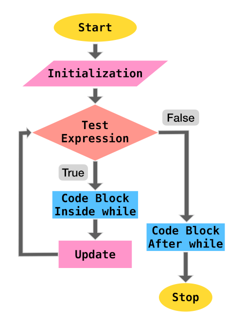
For example, let us traverse a list and print the position(index) and value of each element until we reach the end of the list.
Code
cars = ["Hyundai", "Honda",
"Ford", "Toyota",
"BMW", "Volkswagen"]
i = 0
while i<len(cars):
print(i, cars[i])
i+=1
Output
0 Hyundai
1 Honda
2 Ford
3 Toyota
4 BMW
5 Volkswagen
In the above example, the test condition is i<len(cars) and the update statement is
i+=1.
Exercises#
Let us go through some programming problems which utilize the while iteration statement.
1. Compound Interest
Write a program to calculate the total compound interest payable for given principal, interest rate (compounded annually) and total time (in years).
Code
prin = float(input("Enter the principal amount: "))
rate = float(input("Enter the annual interest rate: "))
time = int(input("Enter the loan duration (in years): "))
amt = prin
while time > 0:
amt += rate*amt/100
time = time - 1
print("Total interest payable:", amt - prin)
Output
Enter the principal amount: 500000
Enter the annual interest rate: 5
Enter the loan duration (in years): 3
Total interest payable: 78812.5
2. Factorial
The factorial of a positive integer n, denoted by n!, is the product of all
positive integers less than or equal to
n.n! = n×(n-1)×(n-2)...3×2×1
Write a program to calculate
n! for a given n (assume n is greater than 0).
Code
n = int(input("Enter n: "))
factorial = 1
while n > 0:
factorial *= n
n = n - 1
print("n! :", factorial)
Output
Enter n: 6
n! : 720
Jump Statements#
Jump statements are used to (abruptly) alter the flow of execution.
Some of the jump statements available in Python are:
pass#
A pass statement acts as a placeholder and performs null (no) operation.
Various reasons for using the keyword pass are provided below:
1. Syntactical Requirement
Using pass becomes a syntactical requirement for cases where the Python interpreter can
raise a SyntaxError due to missing statements.
The below code will execute successfully without any operation in the loop
for i in range(6):
pass
whereas without pass
for i in range(6):
will throw the following SyntaxError
File "<ipython-input-18-f2ba5099d499>", line 1
for i in range(6):
^
SyntaxError: unexpected EOF while parsing
Similarly, inside an if
if 2 < 3:
pass
whereas without pass
if 2 < 3:
will throw the following SyntaxError
File "<ipython-input-20-068861cce0a8>", line 1
if 2 < 3:
^
SyntaxError: unexpected EOF while parsing
2. Skipping Code Execution
pass can be used to skip code execution for certain cases.
For example,
Code
l = [2, 3, 4, 5, 6]
for i in l:
if i%3 == 0:
pass
else:
print(i, "is not divisible by 3")
Output
2 is not divisible by 3
4 is not divisible by 3
5 is not divisible by 3
3. Placeholders
pass can be used to create valid empty functions and classes as placeholders which can be
modified in the future versions of code.
def emptyFunction():
pass
class EmptyClass:
pass
break#
The break statement is used to terminate the execution of immediately enclosing
for or while statement.
The below code will terminate the for loop when i is equal to 4
for i in range(10):
print(i)
if i == 4:
break
0
1
2
3
4
In a while statement,
i =0
while i <10:
print(i)
if i == 4:
break
i+=1
break will terminate the while loop when i is equal to
4
0
1
2
3
4
continue#
continue statement is used to skip the execution of successive statements and start the next
iteration.
The below code will skip all candidates for an interview who have less than 4 years of work experience.
people = [{"name": "ABC", "experience": 6},
{"name": "EFG", "experience": 2},
{"name": "JKL", "experience": 5},
{"name": "XYZ", "experience": 3},]
for candidate in people:
if candidate["experience"]<4:
continue
print(candidate["name"], "is selected for interview")
Output:
ABC is selected for interview
JKL is selected for interview
Nested Loops#
When a loop is present inside another loop, it is known as a nested loop.
For each iteration of the outer loop, the inner loop undergoes complete iteration. Thus, if the outer
loop has to undergo n iterations and the inner loop has to undergo m
iterations, the code block inside the inner loop executes n x m times.
Let us go through a nested loop example:
Factorial#
Write a program to print the factorial of all numbers in the range 1 to 10
(inclusive).
Code
for n in range(1, 11):
factorial = 1
for i in range(1, n+1):
factorial *= i
print(n,"! =", factorial)
Output
1 ! = 1
2 ! = 2
3 ! = 6
4 ! = 24
5 ! = 120
6 ! = 720
7 ! = 5040
8 ! = 40320
9 ! = 362880
10 ! = 3628800
Nested Loop - break#
A break statement inside the inner loop terminates only the inner loop whereas the outer
loop is not affected.
To develop a better understanding, let us write a program to find all prime numbers between 2 and 40.
Code
for n in range(2, 40):
i = 2
while i < n/2:
if n%i == 0:
break
i+=1
if i>n/2:
print(n,"is prime")
Output
2 is prime
3 is prime
5 is prime
7 is prime
11 is prime
13 is prime
17 is prime
19 is prime
23 is prime
29 is prime
31 is prime
37 is prime
Strings#
Strings: Introduction & Creation#
A String (str) is an immutable sequence of Unicode characters which is used
to handle textual data in Python.
They can be specified by enclosing within:
- Single quotes:
'embedded "double" quotes are allowed' - Double quotes:
"embedded 'single' quotes are allowed" - Triple quotes:
'''Three single quotes''',"""Three double quotes""".
Triple quoted strings can also span multiple lines.
Some examples are provided below:
s = "I am a String"
s1 = """A
multiline
String"""
s2 = '''Also a
multiline
String'''
Escape Characters#
The backslash (\) character can be used in a string to escape characters that otherwise have
a special meaning, such as newline, linefeed, or the quote character.
| Escape Sequence | Meaning |
|---|---|
\\ |
Backslash (\) |
\' |
Single quote (') |
\" |
Double quote (") |
\a |
ASCII Bell (BEL) |
\b |
ASCII Backspace (BS) |
\f |
ASCII Formfeed (FF) |
\n |
ASCII Linefeed (LF) |
\r |
ASCII Carriage Return (CR) |
\t |
ASCII Horizontal Tab (TAB) |
\v |
ASCII Vertical Tab (VT) |
Although \' and \" can be used to specify quote characters, Python allows
embedding double quotes inside a single-quoted string ('My name is "Python".') and single
quotes inside a double-quoted string ("Python's World").
Unicode Support#
Python string objects support Unicode characters.
A unicode character can be specified as \u followed by the 4 letter unicode
(\uXXXX).
>>> print("E = mc\u00B2")
E = mc²
In the above example, \u00B2 is the unicode character which represents the 'SUPERSCRIPT
TWO'.
Other Types to String#
In case you want to create a string object from other data types, just use the built-in
str() function as follows:
>>> str(9)
'9'
>>> str(10.0)
'10.0'
Accessing Characters of a String#
Python strings are "immutable", i.e., the state (value) of the objects cannot be modified after they are created.
Using the standard [ ] syntax and zero-based indexing, characters can be accessed in a
string.
If s = "hello",
s[0]will result inhs[2]will result inls[5]will result inIndexError: string index out of rangeas the length of string is5(index0to4)s[2] = 'p'will result inTypeError: 'str' object does not support item assignmentassis immutable
Python also supports negative indexing, i.e., you can access the values of a string from right to left.
Index of -1 denotes the last character of the string, -2 is the second last
character and so forth.
If s = "hello",
s[-1]will result inos[-4]will result ines[-6]will result inIndexError: string index out of rangeas the length of string is5(negative index-1to-5)
Length of String#
The built-in function len() returns the length of a string which is useful during string
traversal or other string operations.
>>> len("hello")
5
>>> s = "sample text"
>>> len(s)
11
>>> p = "python"
>>> l = len(p)
>>> p[l-1]
'n'
String Operations#
We can perform various operations on a string (sequence of characters) such as slicing, membership, concatenation and repetition.
Slicing#
In Python, a character in a string can be easily accessed using its index.
>>> s = "Hello"
>>> s[1]
'e'
Python also provides a way to access a substring from a string. This substring is known as a
slice and it can be obtained using the slice operator [n:m] which returns
the part of the string from the start index (n) to the end index (m),
including the first but excluding the last.
>>> s = "Hello"
>>> s[1:3]
'el'
If the start index (n) is omitted, the default value of n is set as
0 which denotes the beginning of the string. If the end index (m) is omitted,
the substring ends at the last character of the string.
>>> s = "Hello"
>>> s[:3]
'Hel'
>>> s[3:]
'lo'
>>> s[:]
'Hello'
Negative indexing is also supported in the slice operator.
>>> s = "Hello"
>>> s[-4:-2]
'el'
In the above example, -4 is equivalent to len(s) - 4 = 5 - 4 = 1 and
-2 is equivalent to 5 - 2 = 3. Thus, s[-4:-2] is same as
s[1:3].
The slice operator also allows the usage of a third index which is known as step as it allows a user to step over (skip) characters.
>>> s = "Hello"
>>> s[0:5:2]
'Hlo'
In the above example, the substring begins at the start of the string, takes a step size of
2 skipping e and ends at the last character again skipping the 4th character
l.
Membership#
in and not in operators can be used to determine whether a substring is
present/not present in a string.
>>> s = "Hello"
>>> "lo" in s
True
>>> "lp" not in s
True
Concatenation#
The + operator can be used to join two strings.
>>> s1 = "Hello"
>>> s2 = "Python"
>>> s1 + s2
'HelloPython'
>>> s1 + "World"
'HelloWorld'
Repetition#
The * operator repeats a string the number of times as specified by the integer operand.
>>> s = "Hello"
>>> s*3
'HelloHelloHello'
Introduction to String Methods#
Apart from the built-in function len() which returns the length of the string, String
objects have access to several specialized functions (methods) that can:
- Convert Case of Strings
- Check Characters of a String
- Split a String
- Strip Characters from a String
- Checking for Prefix or Suffix in a String
- Find & Replace Characters in a String
Let us discuss these methods in detail in the coming sections.
Convert Case of Strings#
The following methods are useful in converting the case of the characters in a string:
lower()#
All cased characters are converted into lowercase.
>>> "PYthon".lower()
'python'
upper()#
All cased characters are converted into uppercase.
>>> "PYthon".upper()
'PYTHON'
swapcase()#
Uppercase characters are converted into lowercase and lowercase characters are converted into uppercase.
>>> "PYthon".swapcase()
'pyTHON'
capitalize()#
First character is capitalized and rest all characters are lowercased.
>>> "hello py".capitalize()
'Hello py'
title()#
For each word present in the string, the first character is uppercased and the remaining characters are lowercased.
>>> "hello python".title()
'Hello Python'
Check Characters of a String#
The following methods are used to check the type of characters in a string.
isalpha()#
Returns True if all characters in the string are letters (A-Z a-z).
>>> "HelloPython".isalpha()
True
>>> "Hello Python".isalpha()
False # contains whitespace
>>> "HelloPython2".isalpha()
False # contains digit
isdigit()#
Returns True if all characters in the string are digits.
>>> "Hello24".isdigit()
False # contains alphabets
>>> "24".isdigit()
True
isalnum()#
Returns True if all characters in the string are alphanumeric (Alphabets or Numeric).
>>> "02".isalnum()
True
>>> "HelloPython".isalnum()
True
>>> "Hello Python v2".isalnum()
False # contains whitespace
>>> "HelloPythonv2".isalnum()
True
isascii()#
Returns True if the string is empty or all characters in the string are ASCII.
>>> "".isascii()
True
>>> "HelloPython".isascii()
True
>>> "Hello Py \u00B2".isascii()
False
>>> "पा से python".isascii()
False
islower()#
Returns True if all characters are lowercase.
>>> "hello".islower()
True
>>> "Hello".islower()
False
isupper()#
Returns True if all characters are uppercase.
>>> "HELLO".isupper()
True
>>> "Hello".isupper()
False
isspace()#
Returns True if there are only whitespace characters in the string. Some popular whitespace
characters are (space), \t (tab), \n (newline), \r
(carriage return), \f (form feed) and \v (vertical tab).
>>> " ".isspace()
True
istitle()#
Returns True if the string is title-cased, i.e., the first character of every word in the
string is uppercased and the remaining characters are lowercased.
>>> "Hello World".istitle()
True
>>> "Hello world".istitle()
False
>>> "hello world".istitle()
False
Split a String#
Split methods help in splitting/partitioning a string.
partition()#
partition(sep) method splits the string when the separator (sep) is encountered
for the first time, and returns a tuple with three items
(string before separator, separator, string after separator).
>>> "Hi|Ed|Punk".partition('|')
('Hi', '|', 'Ed|Punk')
split()#
split(sep=None, maxsplit=-1) method splits a string into a list based on a string separator
(sep).
If sep is not specified, it defaults to None, where whitespace is regarded as
separator, and the string is stripped of all leading and trailing whitespaces after which it is split
into words contained in the string.
>>> "Hi|Ed|Punk".split('|')
['Hi', 'Ed', 'Punk']
>>> "Hi Ed Punk".split()
['Hi', 'Ed', 'Punk']
>>> " Hi Ed Punk ".split()
['Hi', 'Ed', 'Punk']
If maxsplit is provided, at most maxsplit number of splits are performed and
the list will contain a maximum of maxsplit+1 elements.
maxsplit when not specified defaults to -1, which implies that there is no
limit on the number of splits.
>>> "Hi|Ed|Punk|v2".split('|', 2)
['Hi', 'Ed', 'Punk|v2']
Strip Characters from a String#
Strip methods are useful in removing leading and/or trailing characters in a string.
They accept an optional argument chars which specifies the set of characters which have to
be removed.
If no arguments are provided then chars defaults to ASCII whitespace and the method removes
all leading and/or trailing spaces from the string.
lstrip()#
All leading (on the left) characters are removed from the string.
>>> " Hello|World ".lstrip()
'Hello|World '
>>> "www.edpunk.cc".lstrip('w.')
'edpunk.cc'
rstrip()#
All trailing (on the right) characters are removed from the string.
>>> " Hello|World ".rstrip()
' Hello|World'
>>> "www.edpunk.cc".rstrip('.c')
'www.edpunk'
strip()#
All leading and trailing characters are removed from the string.
>>> " Hello|World ".strip()
'Hello|World'
>>> "www.edpunk.cc".strip('cw.')
'edpunk'
Check Prefix or Suffix in a String#
startswith() and endswith() methods are used check whether a string starts or
ends with the provided substring (or a tuple of substrings).
>>> "Hello Py".startswith("He")
True
>>> "Hello Py".startswith(("He","P"))
True
>>> "Py Hello".startswith(("He","P"))
True
>>> "Hello Py".endswith("y")
True
>>> "Hello Py".endswith(("p","y"))
True
>>> "Py Hello".endswith(("o","n"))
True
Find & Replace Characters in a String#
The following string methods are useful for locating substring in a string.
count()#
count(sub[, start[, end]]) returns the number of non-overlapping occurrences of a substring
sub in the range [start, end].
start and end are optional parameters and they default to 0 and
len(string) respectively.
>>> s = "she sells sea shells"
>>> s.count("she")
2
>>> s.count("she", 5)
1
>>> s.count("she", 5, 10)
0
>>> s.count("she", 5, 17)
1
It has to be noted that the method counts non-overlapping occurrences, so it does not start a new matching process until the current substring matching is complete.
>>> s = "valhala alala"
>>> s.count("al")
4
>>> s.count("ala")
2
In the above example, ala is counted twice as the first occurence is in
valh"ala" and the next occurance is in "ala"la. Although ala can
be located again in al"ala", it overlaps with the occurance "ala"la, hence it
is not counted.
find()#
find(sub[, start[, end]]) returns the lowest index in the string where substring
sub is located in the range [start, end].
start and end are optional parameters and they default to 0 and
len(string) respectively.
The method returns -1 in case the substring is not present.
>>> s = "she sells sea shells"
>>> s.find("she")
0
>>> s.find("she", 5)
14
>>> s.find("see")
-1
>>> s.find("she", 5, 10)
-1
>>> s.find("she", 5, 17)
14
rfind()#
rfind(sub[, start[, end]]) returns the highest index in the string where substring
sub is located in the range [start, end].
start and end are optional parameters and they default to 0 and
len(string) respectively.
The method returns -1 in case the substring is not present.
>>> s = "she sells sea shells"
>>> s.rfind("she")
14
>>> s.rfind("she", 0, 12)
0
>>> s.rfind("see")
-1
>>> s.rfind("she", 5)
14
index()#
index(sub[, start[, end]]) is similar to find(sub[, start[, end]]), but instead
of returning -1 it raises ValueError when the substring is not found.
>>> s = "she sells sea shells"
>>> s.index("she")
0
>>> s.index("she", 5)
14
>>> s.index("see")
Traceback (most recent call last):
File "<stdin>", line 1,
in <module>
ValueError: substring not found
>>> s.index("she", 5, 10)
Traceback (most recent call last):
File "<stdin>", line 1,
in <module>
ValueError: substring not found
>>> s.index("she", 5, 17)
14
rindex()#
s.rindex(sub[, start[, end]]) is similar to rfind(sub[, start[, end]]), but
instead of returning -1 it raises ValueError when the substring is not found.
>>> s = "she sells sea shells"
>>> s.rindex("she")
14
>>> s.rindex("she", 0, 12)
0
>>> s.rindex("see")
Traceback (most recent call last):
File "<stdin>", line 1,
in <module>
ValueError: substring not found
>>> s.rindex("she", 5)
14
replace()#
replace(oldsub, newsub[, count]) returns a copy of the string with all occurrences of
oldsub substring replaced by newsub.
count is an optional parameter which when provided, only replaces the first
count occurrences from the string.
>>> s = "Oh Python! Oh"
>>> s.replace("Oh", "Hi")
'Hi Python! Hi'
>>> s.replace("Oh", "Hi", 1)
'Hi Python! Oh'
Traversing a String#
for and while statements are useful for traversing a string.
Using for#
As a string is a sequence of characters, the for statement can be used to iterate over a
string as shown below.
Code
name = "python"
for char in name:
print(char)
Output
p
y
t
h
o
n
Using while#
A while statement can be used to traverse a string by iterating on the value of index till
the last character index.
Code
name = "python"
i = 0
while i < len(name):
print(name[i])
i += 1
Output
p
y
t
h
o
n
List#
What is a Python List? How to Create a List?#
The most common and widely used collections in Python are lists which store an ordered group of objects (of any datatype) which might have some logical relation. This marks a considerable difference from arrays (in traditional languages) and makes Python an ideal language for handling real-life data which is not type-bound.
Let us create a list of attributes of a particular vehicle available for sale in a car dealership:
>>> l = ["BMW", "Z4", 2019,
... 4, "Red", True]
In this list:
"BMW"is the make of the vehicle,"Z4"is the model of the vehicle,2019is the year when the vehicle was manufactured,4represents the number of wheels,"Red"is the color of the vehicle, andTruetells us that the vehicle up for sale is brand new.
This method of creating a list from a collection of literals is known as list display.
Notice, how this list contains items of multiple data types - str, int and
bool.
Apart from the list display shown above, the built-in list() function can also be used to
create new lists.
If no arguments are provided to the list() function, an empty list is created.
>>> l = list()
>>> l
[]
If a string, tuple or set is passed as an argument, list() functions converts them into a
list.
>>> l = list("abcd")
>>> l
['a', 'b', 'c', 'd']
>>> l = list({1, 2, 3})
>>> l
[1, 2, 3]
>>> l = list((1, 2, 3, 4))
>>> l
[1, 2, 3, 4]
Accessing Items of a List#
Lists use zero-based indexing, where 0 is the index of the first element and len(list) - 1
is the index of the last element.
For example,
>>> l = ["BMW", "Z4", 2019,
... 4, "Red", True]
>>> l[0]
'BMW'
>>> l[2]
2019
Length of List#
The built-in len() function can be used to return the length of the list.
>>> l = ["BMW", "Z4", 2019,
... 4, "Red", True]
>>> len(l)
6
Negative Indexing#
Just like str, sequence types like list support negative indexing, i.e., you
can access the values of list from the end.
Index of -1 denotes the last item in the list, -2 the second last item and so
forth.
>>> l = ["BMW", "Z4", 2019,
... 4, "Red", True]
>>> l[-1]
True
>>> l[-3]
4
Modifying a List#
As lists are mutable, the assignment operator can be used to modify or replace a single item in the list at a given index.
>>> l = ["BMW", "Z4", "Red"]
>>> l[2] = "Black"
>>> l
['BMW', 'Z4', 'Black']
Removing Item from a List#
del statement can be used to delete an item at a given index of a list.
>>> l = ["BMW", "Z4", "Red"]
>>> del l[1]
>>> l
['BMW', 'Red']
List Operations#
We can perform various operations on a list (collection of items) such as membership, concatenation, repetition and slicing.
Membership#
in and not in can be used to detect the membership of an item in a list.
>>> l = ["BMW", "Z4", "Red"]
>>> "Red" in l
True
>>> "Gold" in l
False
>>> "Gold" not in l
True
Concatenation#
+ operator can be used to join two lists to create a new list.
>>> l = ["BMW", "Z4"]
>>> k = [2019, "Red"]
>>> l + k
['BMW', 'Z4', 2019, 'Red']
+= operator joins two lists and assigns it to the target list.
>>> l = ["BMW", "Z4"]
>>> l += [2019, "Red"]
>>> l
['BMW', 'Z4', 2019, 'Red']
Repetition#
The * operator repeats the items of a list the number of times as specified by the integer
operand.
>>> l = [1, 2]
>>> l*3
[1, 2, 1, 2, 1, 2]
Slicing#
A subset of list l can be obtained using the list slice notation given as
l[i:j], where the item at start index i is included, but the item at end index
j is excluded.
For example, the slice notation [1:4] refers to items from index 1 to index
3 (i.e. 4-1).
>>> l = ["BMW", "Z4", 2019,
... 4, "Red", True]
>>> l[1:4]
['Z4', 2019, 4]
The slice notation l[i:j:k] can also include a third number known as the stepper. Here, a
list is sliced from start index i to end index (j) - 1 with a step of
k items.
>>> l = ["BMW", "Z4", 2019,
... 4, "Red", True]
>>> l[1:4:2]
['Z4', 4]
Slice notations also have some useful defaults. 0 is the default for the first number and size of the list is the default for the second number.
>>> l = ["BMW", "Z4", 2019,
... 4, "Red", True]
>>> l[2:]
[2019, 4, 'Red', True]
>>> l[:4]
['BMW', 'Z4', 2019, 4]
Slice notation also supports negative indexing.
>>> l = ["BMW", "Z4", 2019,
... 4, "Red", True]
>>> l[-4:]
[2019, 4, 'Red', True]
>>> l[:-2]
['BMW', 'Z4', 2019, 4]
>>> l[-4:-1]
[2019, 4, 'Red']
Slice notation can be used to replace multiple items in a list.
>>> l = ["BMW", "Z4", 2019,
... 4, "Red", True]
>>> l[:2] = ["Kia", "Sonet"]
>>> l
['Kia', 'Sonet', 2019, 4, 'Red', True]
>>> l = ["BMW", "Z4", 2019,
... 4, "Red", True]
>>> l[1:5:2] = ["Sonet", 2]
>>> l
['BMW', 'Sonet', 2019, 2, 'Red', True]
Slice notation can also be used to delete multiple items in a list.
>>> l = ["BMW", "Z4", 2019,
... 4, "Red", True]
>>> del l[:2]
>>> l
[2019, 4, 'Red', True]
>>> l = ["BMW", "Z4", 2019,
... 4, "Red", True]
>>> del l[:5:2]
>>> l
['Z4', 4, True]
Traversing a List#
List Traversal is the process of visiting every item in a list, usually from the first item to the last item, and executing some instruction on the accessed item.
Python provides 2 ways to traverse a list:
Direct Traversal#
As a list is an ordered collection of items, the for statement can be used to directly and
sequentially access each item.
Code
l = ["BMW", "Z4", 2019,
4, "Red", True]
for item in l:
print(item)
Output
BMW
Z4
2019
4
Red
True
Location or Index Based Traversal#
In location based or index based traversal the value of index starts at 0 and increments as
long as it is lesser than the length of the list.
This index value can be used to access the item at that index in a list using the index operator
[].
for statement can be used to iterate over the index of the list using the
range() and len() functions.
Code
l = ["BMW", "Z4", 2019,
4, "Red", True]
for i in range(len(l)):
print(i, l[i])
Output
0 BMW
1 Z4
2 2019
3 4
4 Red
5 True
This method is also useful when you need to modify the items of a list (without altering the length of list) during traversal.
For example, let us convert each item of the list into a string.
Code
l = ["BMW", "Z4", 2019,
4, "Red", True]
for i in range(len(l)):
# modifying item value
l[i] = str(l[i])
print(l)
Output
['BMW', 'Z4', '2019', '4', 'Red', 'True']
A while statement can be used to traverse a list by iterating on the value of index till the
last item index.
Code
l = ["BMW", "Z4", 2019,
4, "Red", True]
i = 0
while i < len(l):
print(l[i])
i += 1
Output
BMW
Z4
2019
4
Red
True
Built-in Functions that can be used for a List#
Built-in functions max(), min() and sum() are used to calculate
the maximum, minimum and sum of items in a list, respectively.
>>> l = [4, 8, 2, 1, 3]
>>> min(l)
1
>>> max(l)
8
>>> sum(l)
18
Introduction to List Methods#
List objects have access to several specialized functions (methods) that can be used to:
- Add Items to a List
- Remove Items from a List
- Count or Locate Items in a List
- Sort a List
- Reverse a List
- Copy the Contents of a List
Let us discuss these methods in detail in the coming sections.
Adding Items to a List#
append() method adds an item (passed as an argument) to the end of a list.
>>> l = ["T", "C", 2, 4]
>>> l.append(2.5)
>>> l
['T', 'C', 2, 4, 2.5]
If the item has to be added at a particular index, insert() method can be used.
>>> l = ["T", "C", 2, 4]
>>> l.insert(3, 2.5)
>>> l
['T', 'C', 2, 2.5, 4]
extend() method appends each item of the argument list at the end of the target list.
>>> l = ["T", "C", 2, 4]
>>> l.extend([2.5, "SE"])
>>> l
['T', 'C', 2, 4, 2.5, 'SE']
Removing Items from a List#
clear() method removes all items from the list.
>>> l = ["T", "C", 2, 4, "S"]
>>> l.clear()
>>> l
[]
remove() method removes the first occurrence of an item from the list.
>>> l = ["Hi", "Ed", "Py", "Hi"]
>>> l.remove("Hi")
>>> l
['Ed', 'Py', 'Hi']
If an index is provided, pop() method removes the item at that index, else the last item is
removed from the list.
>>> l = ["T", "C", 2, 4, "S"]
>>> item = l.pop()
>>> item
'S'
>>> l
['T', 'C', 2, 4]
>>> l = ["T", "C", 2, 4, "S"]
>>> item = l.pop(2)
>>> item
2
>>> l
['T', 'C', 4, 'S']
Counting or Locating Items in a List#
An item x can be located in a list using the index(x[, i[, j]]) method which
returns the first occurrence of the item at or after index i and before index
j.
In case i and j are not specified they default to i=0 and
j=len(l).
>>> l = [34, 4, 6, 23, 4]
>>> l.index(4)
1
>>> l.index(4, 3)
4
>>> l.index(6, 1, 4)
2
count() method can be used to count the occurrence(s) of an item in a list.
>>> l = [34, 4, 6, 23]
>>> l.count(4)
1
>>> l = ["it", "is", "it", "I"]
>>> l.count("it")
2
Reversing Items#
reverse() method can be used to reverse a list in-place.
>>> l = ["T", "C", 2, 4, "S"]
>>> l.reverse()
>>> l
['S', 4, 2, 'C', 'T']
If you do not wish to modify the existing list and create a new list with items in reverse order, use the
built-in function reversed() nested in the built-in list().
>>> l = ["T", "C", 2, 4, "S"]
>>> new_l = list(reversed(l))
>>> new_l
['S', 4, 2, 'C', 'T']
>>> l
['T', 'C', 2, 4, 'S']
Sorting a List#
Python lists have a built-in sort() method which sorts the items in-place using
< comparisons between items.
The method also accepts 2 keyworded arguments:
keyis used to specify a function which is called on each list element prior to making the comparisons.reverseis a boolean which specifies whether the list is to be sorted in descending order.
>>> l = [34, 4, 6, 23]
>>> l.sort()
>>> l
[4, 6, 23, 34]
>>> l = [34, 4, 6, 23]
>>> l.sort(reverse=True)
>>> l
[34, 23, 6, 4]
>>> l = ["Oh", "Hi", "Py", "ed"]
>>> l.sort()
>>> l
['Hi', 'Oh', 'Py', 'ed']
>>> l = ["Oh", "Hi", "Py", "ed"]
# lowercase the words before sorting
>>> l.sort(key=str.lower)
>>> l
['ed', 'Hi', 'Oh', 'Py']
If you do not wish to modify the existing list and create a new list with sorted items in, use the
built-in sorted() function which returns a new sorted list.
>>> l = [34, 4, 6, 23]
>>> new_l = sorted(l)
>>> new_l
[4, 6, 23, 34]
Copying a List#
In Python, we can create an object (data) and bind its reference to a variable using the assignment
operator (=).
As multiple collections or items in collections can point to the same mutable object, a copy is required so one can change one copy without changing the other.
Let us take an example:
>>> old_l = [1, 2, 3]
# Copying old list into a new list
>>> new_l = old_l
# Checking if both lists are
# pointing to the same object
>>> id(new_l)==id(old_l)
True
# Adding element to new list
>>> new_l.append(4)
>>> new_l
[1, 2, 3, 4]
>>> old_l
[1, 2, 3, 4]
It can be seen how the assignment operator does not create a new copy of the list.
The copy() method can be used to create a new list containing the items of the
original list.
>>> old_l = [1, 2, 3]
# Copying old list into a new list
>>> new_l = old_l.copy()
# Checking if both lists are
# pointing to the same object
>>> id(new_l)==id(old_l)
False
# Adding element to new list
>>> new_l.append(4)
>>> new_l
[1, 2, 3, 4]
>>> old_l
[1, 2, 3]
Assigning a slice of the entire list ([:]) is also equivalent to creating a new copy.
>>> old_l = [1, 2, 3]
# Copying old list into a new list
# using slice notation
>>> new_l = old_l[:]
# Checking if both lists are
# pointing to the same object
>>> id(new_l)==id(old_l)
False
# Adding element to new list
>>> new_l.append(4)
>>> new_l
[1, 2, 3, 4]
>>> old_l
[1, 2, 3]
Nested List#
A list of lists is also known as a nested list.
Previously, we learnt how to create a list of attributes of a particular vehicle available for sale in a dealership.
Let us now create a nested list containing some details of vehicles available for sale.
# Make Model Year No_of_wheels
l = [["Kia", "Sonnet", 2019, 4],
["Toyota", "Camry", 2018, 4],
["BMW", "Z4", 2015, 4],
["BMW", "S1000", 2016, 2],
["KTM", "390", 2019, 2],
]
Thus, nested list is useful in representing a dataset where each item is a list (datum) containing the attributes of an observation.
l[i][j] is the syntax to fetch the j+1th item of the list at index
i of the nested list l.
>>> l[2][1]
'Z4'
List Comprehension#
A short and succinct way of creating a new list by transforming an existing list is via list comprehension.
Also, due to the optimizations present in the Python interpreter, there are performance benefits of using list comprehension.
Member-wise Operation#
List comprehension can be used to make a new list where each element is the result of some operations applied to each member of another sequence or iterable.
For example, to create a new list where each item is squared.
>>> l = [2, 3, 4, 5, 6, 8]
>>> l2 = [i**2 for i in l]
>>> l2
[4, 9, 16, 25, 36, 64]
Filtering or Subsequence#
List comprehension can also be used to create a subsequence of those elements that satisfy a certain condition.
For example, to create a new list where each item is divisible by 2.
>>> l = [2, 3, 4, 5, 6, 8]
>>> l2 = [i for i in l if i%2==0]
>>> l2
[2, 4, 6, 8]
Sample Programs#
1. Min, Max and Mean#
Write a program to find the minimum, maximum and mean of values stored in a list input by user.
a) Without Using Built-in Functions
Code
#create an empty list
l = []
n = int(input("Enter length of list: "))
for i in range(n):
val = float(input("Enter item: "))
#append marks in the list
l.append(val)
# Set first item as the default min value
minval = l[0]
# Set first item as the default max value
maxval = l[0]
# Store sum of items
s = 0
for val in l:
# check if item value is smaller than current min val
if val < minval:
minval = val
# check if item value is greater than current max val
if val > maxval:
maxval = val
s += val
print("Minimum :", minval)
print("Maximum :", maxval)
print("Mean :", s/n)
Output
Enter length of list: 5
Enter item: 3
Enter item: 2
Enter item: 6
Enter item: 9
Enter item: 1
Minimum : 1.0
Maximum : 9.0
Mean : 4.2
b) Using Built-in Functions
Code
#create an empty list
l = []
n = int(input("Enter length of list: "))
for i in range(n):
val = float(input("Enter item: "))
#append marks in the list
l.append(val)
print("Minimum :", min(l))
print("Maximum :", max(l))
print("Mean :", sum(l)/n)
Output
Enter length of list: 5
Enter item: 3
Enter item: 2
Enter item: 6
Enter item: 9
Enter item: 1
Minimum : 1.0
Maximum : 9.0
Mean : 4.2
2. Linear Search#
Write a program to enter a list and then check if the number entered by a user is present in that list.
Code
#create an empty list
l = []
n = int(input("Enter length of list: "))
for i in range(n):
val = input("Enter item: ")
#append marks in the list
l.append(val)
search = input("Enter search value: ")
found = False
for i in range(n):
if l[i] == search:
found = True
break
if found:
print("Search value located at index", i)
else:
print("Search value not found")
Output
Enter length of list: 4
Enter item: 2
Enter item: 6
Enter item: 3
Enter item: 7
Enter search value: 3
Search value located at index 2
Enter length of list: 4
Enter item: 2
Enter item: 6
Enter item: 3
Enter item: 7
Enter search value: 1
Search value not found
3. Frequency of Elements#
Write a program to enter a list and then print the frequency of elements present in that list.
a) Without Using Built-in Functions
Code
#create an empty list
l = []
n = int(input("Enter length of list: "))
for i in range(n):
val = input("Enter item: ")
#append marks in the list
l.append(val)
# Let us create two lists
# 1. to store unique items
items = []
# 2. to store the count of unique items
counts = []
for val in l:
if val not in items:
items.append(val)
counts.append(1)
else:
for idx in range(len(items)):
if items[idx] == val:
counts[idx] += 1
print("Frequency of Elements")
for idx in range(len(items)):
print(items[idx], "-", counts[idx])
Output
Enter length of list: 8
Enter item: 2
Enter item: 3
Enter item: 3
Enter item: 4
Enter item: 2
Enter item: 5
Enter item: 6
Enter item: 6
Frequency of Elements
2 - 2
3 - 2
4 - 1
5 - 1
6 - 2
b) Using Built-in Functions
Code
l = []
n = int(input("Enter length of list: "))
for i in range(n):
val = input("Enter item: ")
#append marks in the list
l.append(val)
# List to store unique items
items = []
print("Frequency of Elements")
for val in l:
if val not in items:
items.append(val)
print(val, "-", l.count(val))
Output
Enter length of list: 8
Enter item: 2
Enter item: 3
Enter item: 3
Enter item: 4
Enter item: 2
Enter item: 5
Enter item: 6
Enter item: 6
Frequency of Elements
2 - 2
3 - 2
4 - 1
5 - 1
6 - 2
Tuple#
List vs Tuple#
Tuples are like lists, with a difference - they are immutable. This means that once initialized a user cannot modify its value, which makes it a useful feature to ensure the sanctity of data and guarantee that it is not being modified by the program.
How to Create Tuple?#
Tuples are declared using parentheses ( ), with successive items separated by a comma
,.
>>> l = ("Hi", "Ed", "Punk")
>>> type(l)
<class 'tuple'>
tuple()#
Apart from the method shown above, the built-in tuple() function can also be used to create
new tuples.
If no arguments are provided to the tuple() function, an empty tuple is created.
>>> t = tuple()
>>> t
()
If a string, tuple or set is passed as an argument, tuple() functions converts them into a
tuple.
>>> t = tuple("abcd")
>>> t
('a', 'b', 'c', 'd')
>>> t = tuple({1, 2, 3})
>>> t
(1, 2, 3)
>>> t = tuple([1, 2, 3, 4])
>>> t
(1, 2, 3, 4)
What is a Singleton?#
In case a tuple has only 1 item, it is known as a singleton.
It is a good practice to include a trailing comma to avoid the Python interpreter from treating it as a value inside regular parentheses as shown in the examples below.
>>> regular_string = ("Hi")
>>> regular_string
'Hi'
>>> type(regular_string)
<class 'str'>
>>> regular_int = (1)
>>> regular_int
1
>>> type(regular_int)
<class 'int'>
>>> str_tuple = ("Hi", )
>>> type(str_tuple)
<class 'tuple'>
>>> int_tuple = (1, )
>>> type(int_tuple)
<class 'tuple'>
Accessing Items of a Tuple#
Tuples use zero-based indexing, where 0 is the index of the first element and len(tuple) - 1
is the index of the last element.
>>> t = ("BMW", "Z4", 2019,
... 4, "Red", True)
>>> t[0]
'BMW'
>>> t[2]
2019
Length of Tuple#
The built-in len() function can be used to return the length of the tuple.
>>> t = ("BMW", "Z4", 2019,
... 4, "Red", True)
>>> len(t)
6
Negative Indexing#
Just like list, tuple supports negative indexing, i.e., you can access the
values of tuple from the end. Index of -1 denotes the last item in the tuple, -2 is the second last item
and so forth.
>>> t = ("BMW", "Z4", 2019,
... 4, "Red", True)
>>> t[-1]
True
>>> t[-3]
4
Tuples are Immutable#
Tuples are immutable, i.e., no modifications are permitted once it is created and any attempt to do so raises an error.
>>> t = ("BMW", "Z4", 2019)
>>> t[1] = "Charger"
Traceback (most recent call last):
File "<stdin>", line 1, in <module>
TypeError: 'tuple' object does not support item assignment
Tuple Operations#
We can perform various operations on a tuple such as membership, concatenation, repetition and slicing.
Membership#
in and not in can be used to detect the membership of an item in a tuple.
>>> t = ("BMW", "Z4", 2019,
... 4, "Red", True)
>>> "Red" in t
True
>>> "Gold" in t
False
>>> "Gold" not in t
True
Concatenation#
+ operator can be used to join two tuples to create a new tuple.
>>> t = ("BMW", "Z4")
>>> u = (2019, "Red")
>>> t+u
('BMW', 'Z4', 2019, 'Red')
Repetition#
The * operator creates a new tuple with items of a tuple repeated the number of times as
specified by the integer operand.
>>> t = (1, 2)
>>> t*3
(1, 2, 1, 2, 1, 2)
Tuple Slicing#
A subset of tuple t can be obtained using the tuple slice notation given as
t[i:j], where the item at index i is included, but the item at index
j is excluded.
For example, the slice notation [1:4] refers to items from index 1 to index
3 (i.e. 4-1).
>>> t = ("BMW", "Z4", 2019,
... 4, "Red", True)
>>> t[1:4]
('Z4', 2019, 4)
The slice notation t[i:j:k] can also include a third number known as the step. Here, a tuple
is sliced from start index i to end index (j) - 1 with a step of
k items.
>>> t = ("BMW", "Z4", 2019,
... 4, "Red", True)
>>> t[1:4:2]
('Z4', 4)
Slice notations also have some useful defaults.
0 is the default for the first number and size of the tuple is the default for the second
number.
>>> t = ("BMW", "Z4", 2019,
... 4, "Red", True)
>>> t[2:]
(2019, 4, 'Red', True)
>>> t[:4]
('BMW', 'Z4', 2019, 4)
Slice notation also supports negative indexing.
>>> t = ("BMW", "Z4", 2019,
... 4, "Red", True)
>>> t[-4:]
(2019, 4, 'Red', True)
>>> t[:-2]
('BMW', 'Z4', 2019, 4)
>>> t[-4:-1]
(2019, 4, 'Red')
Traversing a Tuple#
Tuple Traversal is the process of visiting every item in a tuple, usually from the first item to the last item, and executing some instruction on the accessed item.
Python provides 2 ways to traverse a tuple:
Direct Traversal#
As a tuple is an ordered collection of items, the for statement can be used to directly and
sequentially access each item.
Code
t = ("BMW", "Z4", 2019,
4, "Red", True)
for item in t:
print(item)
Output
BMW
Z4
2019
4
Red
True
Location or Index Based Traversal#
In location based or index based traversal the value of index starts at 0 and increments as
long as it is lesser than the length of the tuple.
This index value can be used to access the item at that index in a tuple using the index operator
[].
for statement can be used to iterate over the index of the tuple using the
range() and len() functions.
Code
t = ("BMW", "Z4", 2019,
4, "Red", True)
for i in range(len(t)):
print(t[i])
Output
BMW
Z4
2019
4
Red
True
A while statement can be used to traverse a tuple by iterating on the value of index.
Code
t = ("BMW", "Z4", 2019,
4, "Red", True)
index = 0
while index < len(t):
print(t[index])
index += 1
Output
BMW
Z4
2019
4
Red
True
Built-in Functions that can be used for a Tuple#
Built-in functions max(), min() and sum() can be used to calculate
the maximum, minimum and sum of items in a tuple, respectively.
>>> t = (4, 8, 2, 1, 3)
>>> min(t)
1
>>> max(t)
8
>>> sum(t)
18
Locating Items in a Tuple#
As compared to a list, tuple supports only methods that do not try to modify
it.
An item x can be located in a tuple using the index(x[, i[, j]]) method which
returns the first occurrence of the item at or after index i and before index
j. In case i and j are not specified they default to
i=0 and j=len(t).
>>> t = (34, 4, 6, 23, 4)
>>> t.index(4)
1
>>> t.index(4, 3)
4
>>> t.index(6, 1, 4)
2
Counting the Occurrence of an Item#
count() method can be used to count the occurrence(s) of an item in a tuple.
>>> t = (34, 4, 6, 23, 4)
>>> t.count(4)
2
>>> t = ("it", "is", "it", "I")
>>> t.count("it")
2
New Tuple with Reversed Items#
To create a new tuple with items in reverse order, use the built-in function reversed()
nested in the built-in tuple().
>>> t = ("T", "C", 2, 4, "S")
>>> new_t = tuple(reversed(t))
>>> new_t
('S', 4, 2, 'C', 'T')
>>> t
('T', 'C', 2, 4, 'S')
New Tuple with Sorted Items#
To create a new tuple with sorted items, use the built-in sorted(x,[key, reverse]) function
which returns a new sorted tuple.
The method optionally accepts 2 keyword (named) arguments:
keywhich is used to specify a function which is called on each tuple element prior to making the comparisons, andreverseis a boolean which specifies whether the tuple is to be sorted in descending order.
>>> t = (34, 4, 6, 23, 9)
>>> tuple(sorted(t))
(4, 6, 9, 23, 34)
>>> tuple(sorted(t, reverse=True))
(34, 23, 9, 6, 4)
>>> t = ("Oh", "Hi", "Py", "it")
>>> tuple(sorted(t))
('Hi', 'Oh', 'Py', 'it')
# lowercase the words before sorting
>>> tuple(sorted(t, key=str.lower))
('Hi', 'it', 'Oh', 'Py')
Nested Tuple#
A tuple of tuples is also known as a nested tuple.
Let us create a nested tuple containing the details of all vehicles available for sale.
# Make Model Year No_of_wheels
t = (
("Kia", "Sonnet", 2019, 4),
("Toyota", "Camry", 2018, 4),
("BMW", "Z4", 2015, 4),
("BMW", "S1000", 2016, 2),
("KTM", "390", 2019, 2),
)
t[i][j] is the syntax to fetch the j+1 th item of the tuple at index
i of the nested tuple t.
>>> t[2][1]
'Z4'
As compared to a nested list, a nested tuple is useful in representing a dataset (such as a table fetched from a database) where it is important to ensure the sanctity of data as the code cannot modify it because tuples are immutable.
Understanding the Immutable Nature of Tuples#
Just like lists, the += operation works for a tuple and adds new item(s) to it.
>>> t = ("Hi", "Ed", "Punk")
>>> t += (1, 2)
>>> t
('Hi', 'Ed', 'Punk', 1, 2)
But tuples are immutable right?
Then how are we able to modify it.
To understand it better, let us revisit what happens when we apply += operator on a list.
>>> l = ["Hi", "Ed", "Punk"]
>>> id_l = id(l)
>>> l += [1, 2]
>>> l
['Hi', 'Ed', 'Punk', 1, 2]
>>> id(l) == id_l
True
In case of a list, the modified list l still points at the same object.
Now, let us add items to a tuple.
>>> t = ("Hi", "Ed", "Punk")
>>> id_t = id(t)
>>> t += (1, 2)
>>> t
('Hi', 'Ed', 'Punk', 1, 2)
>>> id(t) == id_t
False
In case of a tuple, the modified tuple is actually a completely new tuple with contents of the original tuple and the extension.
The original tuple is not modified as it is immutable. But, as t is no longer pointing to
the original tuple, it is freed from memory.
Thus, it is recommended that instead of +=, append() and extend()
methods should be employed to add new items programatically as it will raise an error in case the code
is trying to modify a tuple.
>>> l = ["Hi", "Ed", "Punk"]
>>> l.extend([1, 2])
>>> l
['Hi', 'Ed', 'Punk', 1, 2]
>>> t = ("Hi", "Ed", "Punk")
>>> t.extend((1, 2))
Traceback (most recent call last):
File "<stdin>", line 1, in <module>
AttributeError: 'tuple' object has no attribute 'extend'
Dictionary#
What is a Dictionary?#
Python provides a mapping type collection which contains keys, and values corresponding to those keys.
This collection is known as a dictionary (type dict) , where each key is unique
and can be used to easily store or retrieve values (any data-type including string,
int, float, list).
Dictionaries are indexed by keys (any immutable type - numbers, string, tuple) as compared to lists which are indexed by a range of numbers.
How to Create a Dictionary#
An empty dictionary can be created using a pair of braces - {} or using the built-in
function dict() which is also a constructor.
>>> d = {}
>>> type(d)
<class 'dict'>
>>> d = dict()
>>> d
{}
>>> type(d)
<class 'dict'>
To create a new dictionary with some initial values, one can use:
Key: Value Pairs#
A sequence of key: value pairs separated by commas in braces - {}.
>>> d = {"yr": 20, "name": "Ed",
... 18: True}
>>> d
{'yr': 20, 'name': 'Ed', 18: True}
Sequence of (key, value) Tuples#
A sequence of (key, value) tuples can be passed as an argument to the dict() function.
>>> l = [("yr",20), ("name","Ed"),
... (18,True)]
>>> d = dict(l)
>>> d
{'yr': 20, 'name': 'Ed', 18: True}
Keyword/Named Arguments#
Keys and values can be passed as keyword arguments to the dict() function.
>>> d = dict(yr=20, name="Ed",
... is18=True)
>>> d
{'yr': 20, 'name': 'Ed', 'is18': True}
One of the limitations of this method is that the keys of the dictionary are only of type string and their names must be within the namespace of an identifier.
Key and Value Lists#
There might cases when there is a need to combine two lists where keys are in one list and the corresponding values are available in another list.
The built-in zip() function is useful for combining two lists into tuple pairs.
The zipped iterator can be passed as an argument to the dict() to create a new mapping
collection.
>>> m = ["yr", "name", 18]
>>> n = [20, "Ed", True]
>>> list(zip(m, n))
[('yr', 20), ('name', 'Ed'), (18, True)]
>>> dict(zip(m, n))
{'yr': 20, 'name': 'Ed', 18: True}
Keys with Default Value#
dict.fromkeys(iterable[, value]) can be used to create new dictionary with items of an
iterable as keys with an optional value (default - None) corresponding to the
keys.
>>> l = ["yr", "name", 18]
>>> dict.fromkeys(l)
{'yr': None, 'name': None, 18: None}
>>> dict.fromkeys(l, 0)
{'yr': 0, 'name': 0, 18: 0}
Accessing Items (Key:Value) of a Dictionary#
Index Operator []#
d[x] can be used to access the value corresponding to a key x in a dictionary
d.
>>> d = {"yr": 20, "name": "Ed",
... 18: True}
>>> d["yr"]
20
get()#
get(key[, default]) method can also be used to fetch the value for a key if key is in the
dictionary, else a default value is returned.
If default is not provided, None is the default value returned.
>>> d = {"yr": 20, "name": "Ed",
... 18: True}
>>> d.get("name")
'Ed'
>>> d.get("version") is None
True
>>> d.get("version", "1.0")
'1.0'
This is an elegant method of fetching a value from a dictionary and it should be used in real life
software codes as it never raises a KeyError.
Updating a Dictionary#
Index Operator []#
d[x] = y can be used to add the value y corresponding to a key x
in a dictionary d.
In case key x already exists, assignment updates or overwrites the value corresponding to
it.
>>> d = {"yr": 20, 18: True}
>>> d["name"] = 'Ed'
>>> d
{'yr': 20, 18: True, 'name': 'Ed'}
>>> d["name"] = 'Py'
>>> d
{'yr': 20, 18: True, 'name': 'Py'}
update()#
update() method can be used to add new items or update existing items in a
dict.
This method accepts the following:
1. Dictionary
>>> d = {"yr": 20, 18: True}
>>> d.update({"name": 'Ed'})
>>> d
{'yr': 20, 18: True, 'name': 'Ed'}
>>> d.update({"yr": 15, 18: False})
>>> d
{'yr': 15, 18: False, 'name': 'Ed'}
2. Sequence of (key, value) pairs
>>> d = {"yr": 20, 18: True}
>>> d.update([("name", 'Ed'),
... ('yr', 15)])
>>> d
{'yr': 15, 18: True, 'name': 'Ed'}
3. Keyworded arguments
>>> d = {"yr": 20, 18: True}
>>> d.update(name="Ed", yr=15)
>>> d
{'yr': 15, 18: True, 'name': 'Ed'}
setdefault()#
setdefault(key[, default]) method returns a value corresponding to a key.
If the key is not present in the dictionary, it is inserted with the provided default value.
If no default value is provided, the value is set as None.
>>> d = {"yr": 20, 18: True}
>>> d.setdefault("name")
>>> d
{'yr': 20, 18: True, 'name': None}
>>> d = {"yr": 20, 18: True}
>>> d.setdefault("name", "Ed")
'Ed'
>>> d
{'yr': 20, 18: True, 'name': 'Ed'}
Removing an Item (Key:Value) from a Dictionary#
del#
del keyword can be used to remove a key: value pair.
>>> d = {"yr": 20, "name": "Ed",
... 18: True}
>>> del d["name"]
>>> d
{'yr': 20, 18: True}
clear()#
clear() method can be used to clear all values of a dictionary.
>>> d = {"yr": 20, "name": "Ed",
... 18: True}
>>> d.clear()
>>> d
{}
pop()#
pop(key[, default]) method can be used to remove a key: value pair.
In case the key is not present in the dictionary, the method returns the value of argument
default provided by the user.
>>> d = {"yr": 20, "name": "Ed",
... 18: True}
>>> d.pop("name")
'Ed'
>>> d
{'yr': 20, 18: True}
>>> d.pop("name")
Traceback (most recent call last):
File "<stdin>", line 1, in <module>
KeyError: 'name'
>>> d.pop("name", "Punk")
'Punk'
popitem()#
popitem() can be used to destructively iterate over a dictionary removing and returning a
(key, value) pair in LIFO (Last Item First Out) order.
>>> d = {"yr": 20, "name": "Ed",
... 18: True}
>>> d.popitem()
(18, True)
>>> d.popitem()
('name', 'Ed')
>>> d.update({"name": "py"})
>>> d
{'yr': 20, 'name': 'py'}
>>> d.popitem()
('name', 'py')
>>> d.popitem()
('yr', 20)
>>> d
{}
Dictionary Operations#
Membership#
in keyword can be used to test the presence of a key in a dictionary.
>>> d = {"yr": 20, 18: True}
>>> "yr" in d
True
Similarly, not in can be used to determine the absence of a key.
>>> "name" not in d
True
Union#
The | (union) operator can be used to merge two dictionaries.
>>> d = {"yr": 20, 18: True}
>>> n = {"name": "Ed"}
>>> d | n
{'yr': 20, 18: True, 'name': 'Ed'}
In case of common keys between the two operands (dictionaries), the values of the operand on the right takes priority.
>>> d = {"yr": 20, 18: True}
>>> n = {"yr": 15, "name": "Ed"}
>>> d | n
{'yr': 15, 18: True, 'name': 'Ed'}
In the above example, both d and n shared a common key yr. The
value corresponding to yr in n gets priority.
Traversing a Dictionary#
Compared to position based indexing of list or tuple, dictionaries are indexed
based on the key.
Direct Traversal#
for loop can be used to directly iterate over the keys of a dict.
d = {"yr": 20, "name": "Ed",
18: True}
for key in d:
print(key,":", d[key])
Output
yr : 20
name : Ed
18 : True
Traversing Using Dictionary Methods#
Dictionary methods items(), keys() and values() can be used to
fetch the items, keys and values in a dictionary, respectively.
>>> d = {"yr": 20, "name": "Ed",
... 18: True}
>>> d.keys()
dict_keys(['yr', 'name', 18])
>>> d.values()
dict_values([20, 'Ed', True])
>>> d.items()
dict_items([('yr', 20), ('name', 'Ed'), (18, True)])
dict_keys, dict_values and dict_items are iterables that can be
used in a for statement to traverse the dictionary.
Code
d = {"yr": 20, "name": "Ed",
18: True}
for key in d.keys():
print(key)
Output
yr
name
18
Code
d = {"yr": 20, "name": "Ed",
18: True}
for value in d.values():
print(value)
Output
20
Ed
True
Code
d = {"yr": 20, "name": "Ed",
18: True}
for key, value in d.items():
print(key,":", value)
Output
yr : 20
name : Ed
18 : True
Built-in Functions for a Dictionary#
Number of Items#
len() can be used to fetch the number of items in the dictionary.
>>> d = {"yr": 20, "name": "Ed",
... 18: True}
>>> len(d)
3
Min and Max#
The min() and max() built-in functions return the minimum and maximum value
among the keys of a dictionary.
In case of string keys, they return the first and last occurring strings alphabetically.
>>> d = {"yr": 20, "name": "Ed",
... "is18": True}
>>> min(d)
'is18'
>>> max(d)
'yr'
>>> d = {2: "b", 3: "c", 1: "a"}
>>> min(d)
1
>>> max(d)
3
Creating a Copy of a Dictionary#
A new copy of a dictionary can be made using copy() method:
>>> old_d = {"a": 1, "b": 2}
>>> new_d = old_d.copy()
# Checking if both dicts are
# pointing to the same object
>>> new_d is old_d
False
>>> new_d["c"] = 3
>>> new_d["b"] = 4
>>> new_d
{'a': 1, 'b': 4, 'c': 3}
>>> old_d
{'a': 1, 'b': 2}
Nested Dictionary#
When the value in a key:value pair of a dictionary is of type dict, it is known
as a nested dictionary.
In simple terms, it is a dictionary inside a dictionary.
Records of a table can be represented as a nested dict with primary key as the outer dict keys.
d = { 1: {"name": "Amar", "age": 19},
2: {"name": "Ria", "age": 20},
3: {"name": "Rao", "age": 18}}
print(d[1])
print(d[2]["name"])
Output
{'name': 'Amar', 'age': 19}
Ria
Sample Programs#
Frequency of Characters#
Write a program to count the number of times a character appears in a given string.
Code
d = {}
s = input("Enter string: ")
for c in s:
if c in d:
d[c] += 1
else:
d[c] = 1
print("Frequency of characters")
for key in d:
print(key, "-", d[key])
Output
Enter string: pythondata
Frequency of characters
p - 1
y - 1
t - 2
h - 1
o - 1
n - 1
d - 1
a - 2
Salary Book#
Write a program to enter employee names and their salaries as input and store them in a dictionary.
Code
n = int(input("Enter number of employees: "))
emp = dict()
for cnt in range(n):
name = input("Enter employee name: ")
salary = int(input("Enter salary: "))
emp[name] = salary
print("Employee Name & Salary")
for key in emp:
print(key, '-', emp[key])
Output
Enter number of employees: 3
Enter employee name: Anil Raj
Enter salary: 12000
Enter employee name: Dinesh Kumar
Enter salary: 15000
Enter employee name: Sam Singh
Enter salary: 10000
Employee Name & Salary
Anil Raj - 12000
Dinesh Kumar - 15000
Sam Singh - 10000
Python Standard Library#
Built-in Functions#
Python has a rich and extensive Standard Library which gives it an edge over traditional programming languages.
Python Standard Library contains 69 built-in functions that are commonly used by programmers which saves a lot of time as they can be directly used in a program.
We have already used some functions in the previous sections like input(),
output(), len(), sum(), min(), max(),
list(), dict(), etc.
Some of the widely used functions can be categorized as follows:
- Mathematical Functions
- Type Functions
- Input/Output Functions
- Base/Unicode Functions
Mathematical Functions#
abs()#
abs(x) returns the absolute value or magnitude of x of type int,
float or complex number.
>>> abs(-2.3)
2.3
>>> abs(-10)
10
>>> abs(2 + 2j)
2.8284271247461903
round()#
round(x [,ndigits]) rounds off x (float) to ndigits
precision after the decimal point.
In case ndigits is not provided, it rounds off to the nearest integer.
>>> round(2.33462398)
2
>>> round(2.33462398, 3)
2.335
sum()#
sum(sequence [,start]) returns the sum of items in a sequence of type
list, tuple, range or set.
If a second argument start is provided, it is added to the sum.
>>> sum([1, 2, -1])
2
>>> sum((1, 2, -1))
2
>>> sum([1, 2, -1], 10)
12
min()#
min(sequence) returns the minimum value of items in a sequence of type
list, tuple, range, str or set.
Apart from iterables, min(arg1, arg2, ..) also accepts multiple arguments arg1,
arg2 .. of numeric type and returns the smallest among these arguments.
>>> min([1, 2, -1])
-1
>>> min(1, 2, -1)
-1
# character with minimum
# ASCII value in a String
>>> min("hello")
'e'
max()#
max(sequence) returns the maximum value of items in a sequence of type
list, tuple, range, str or set.
Apart from iterables, max(arg1, arg2, ..) also accepts multiple arguments arg1,
arg2 .. of numeric type and returns the largest among these arguments.
>>> max([1, 2, -1])
2
>>> max(1, 2, -1)
2
# character with maximum
# ASCII value in a String
>>> max("hello")
'o'
pow()#
pow(base, exp [,mod]) raises a base (int, float) to
the power exp (int, float), i.e. base**exp.
If mod (int) is provided (base**exp) % mod is returned.
>>> pow(3, 2, 7)
2
>>> pow(1.4141, 2)
1.9996788099999998
divmod()#
divmod(a, b) returns a tuple (a // b, a % b) consisting of the quotient and
remainder when a (int, float) is divided by b
(int, float).
>>> divmod(23, 3.5)
(6.0, 2.0)
>>> divmod(-10, 7)
(-2, 4)
Type Functions#
Python has built-in functions to handle various aspects of datatypes such as checking and conversion.
Type Checking#
type() and isinstance() builtin functions are used for checking the data type
of objects.
Check out the Type Checking section in the chapter Variable, Objects & Data Types to learn more about it in detail.
Built-in Type Functions#
We have previously discussed the various built-in data types available in Python.
The following functions are often used to assign a default value or create an empty collection when no arguments are provided:
| Function | Default Value |
|---|---|
bool() |
False |
int() |
0 |
float() |
0.0 |
complex() |
0j |
str() |
'' |
list() |
[] |
tuple() |
() |
set() |
set() |
frozenset() |
frozenset() |
dict() |
{} |
The Type Casting section of the chapter Variable, Objects & Data Types covers these functions in detail in case any argument is passed.
I/O Functions#
Python provides the following built-in functions to handle user input and result output:
input()#
input() function can be used to accept a user input and assign it to a variable.
When this function is encountered in the code, the python interpreter waits for the user to type a response which is read as a string.
Code
name = input("Enter name: ")
print("Hello,", name)
Output
Enter name: Python
Hello, Python
print()#
The built-in print() function can be used to display an output (value of variables,
expressions, etc.) on the standard output.
For example, the below code computes the area of a rectangle and displays it:
Code
length = 10
breadth = 5
area = length * breadth
print("Area:", area)
Output
Area: 50
Both, input() and print() functions are covered in detail in the chapter
Input & Output.
open()#
open() function is used to open a file and return the corresponding file object.
This function supports various modes useful for reading from a file and writing to a file.
An example usage of open() function is shown below:
f = open('data.txt', 'r+')
# f is the file object which
# can perform read and write
# operations on the file
This function is covered in detail in the chapter File Handling.
Base/Unicode Conversion Functions#
bin()#
Converts an int to a binary (base-2) string prefixed with '0b'.
>>> bin(9)
'0b1001'
oct()#
Converts an int to an octal (base-8) string prefixed with '0o'.
>>> oct(9)
'0o11'
hex()#
Converts an int to a lowercase hexadecimal (base-16) string prefixed with "0x".
>>> hex(29)
'0x1d'
ord()#
Returns the integer Unicode code point for the given Unicode character str.
>>> ord("a")
97
>>> ord("β")
946
chr()#
Converts the integer Unicode code point into the corresponding Unicode string.
>>> chr(97)
'a'
>>> chr(946)
'β'
What are Built-in Modules?#
Apart from built-in functions, the Python Standard Library also contains a wide range of built-in modules which are a group of functions organized based on functionality.
Some of the commonly used modules are mentioned below:
math- Mathematical functionsrandom- Generate pseudo-random numbersstatistics- Statistical functions
Accessing Modules
A module can be accessed in a program using the import statement.
>>> import math
The above import statement loads all the functions available in the math
module. To access any function in the module, simply type the module name followed by a period
(.), followed by the function name.
>>> import math
>>> math.pow(3, 2)
9.0
Instead of loading all the functions in a module, the from statement can be used to access
only specified functions.
>>> from math import pow
>>> pow(3, 2)
9.0
math Module#
math module provides mathematical functions and constants as defined by the C standard.
Constants#
The following frequently used mathematical constants are available in math module:
pi:π = 3.141592…(to available precision)e:e = 2.718281…(to available precision)tau:τ = 2π = 6.283185…(to available precision)
>>> import math
>>> math.pi
3.141592653589793
>>> math.e
2.718281828459045
>>> math.tau
6.283185307179586
Functions#
Following useful mathematical functions are available in the math module:
fabs()
fabs(x) returns the absolute value of x.
>>> import math
>>> math.fabs(-3.24)
3.24
gcd()
gcd(a, b) returns the greatest common divisor of integers a and b.
>>> import math
>>> math.gcd(54, 24)
6
ceil()
ceil(x) returns the smallest integer greater than or equal to x.
>>> import math
>>> math.ceil(2.13)
3
floor()
floor(x) returns the largest integer less than or equal to x.
>>> import math
>>> math.floor(2.13)
2
fmod()
fmod(x, y) returns the value of the expression x - n*y such that the result has
the same sign as x and magnitude less than |y| for some integer
n.
This function should be preferred when working with floating point numbers as compared to
x % y that should be used when working with integers.
>>> import math
>>> math.fmod(2.14, 0.5)
0.14000000000000012
>>> math.fmod(-2.14, 0.5)
-0.14000000000000012
pow()
pow(x, y) raises x to the power of y.
>>> import math
>>> math.pow(5, 2)
25.0
sqrt()
sqrt(x) returns the square root of x.
>>> import math
>>> math.sqrt(25)
5.0
sin(), cos() & tan()
sin(x), cos(x) and tan(x) return the sine, cosine and tangent of
x (radians) respectively.
>>> import math
>>> math.cos(math.pi/3)
0.5000000000000001
>>> math.sin(math.pi/2)
1.0
>>> math.tan(math.pi/4)
0.9999999999999999
factorial()
factorial(n) computes the factorial of a positive integer n which is the
product of all positive integers less than or equal to
n.n! = n×(n-1)×(n-2)...3×2×1,
where 0! = 1
>>> import math
>>> math.factorial(5)
120
random Module#
random module provides access to functions which can generate random numbers.
random()#
random() function draws a random float in the half open interval [0.0, 1.0)
with a uniform probability.
>>> import random
>>> random.random()
0.6857133962949904
Random Integer from Range#
randrange(stop) is used to randomly select an integer from a range 0 to
stop (excluding).
>>> import random
>>> random.randrange(10)
5
randrange(start, stop) is used to randomly select an integer from a range start
to stop (excluding).
>>> import random
>>> random.randrange(5, 10)
8
randint(a, b) is an alias for randrange(a, b+1), provides an interface to
generate a random integer N such that a <= N <= b (includes
boundaries).
>>> import random
>>> random.randint(10, 20)
12
statistics Module#
statistics module provides functions that are useful for calculating mathematical statistics
of numeric (Real-valued) data.
Mean#
mean(data) returns the arithmetic mean or average value of data
(list or tuple of int or float).
>>> from statistics import mean
>>> mean([1, 2, 3, 6])
3
Median#
median(data) returns the median or middle value of data (list or
tuple of int or float) using the common "mean of middle two"
method.
>>> from statistics import median
>>> median([1, 2, 3, 6])
2.5
Mode#
mode(data) returns the most commonly occurring value in the data
(list or tuple of int, str or float).
If there are multiple modes with the same count, the first occurrence in the sequence is returned.
>>> from statistics import mode
>>> mode([1, 2, 3, 6])
1
>>> mode([1, 2, 2, 3, 6])
2
>>> mode(["a", "b", "a", "c"])
'a'
File Handling#
File Handling in Python - Introduction & Overview#
So far we have written programs which accept input from the user via keyboard and display the generated output on the standard output (console).
This activity has the following disadvantages:
- Feasible for small inputs, but cumbersome in case of large inputs.
- The entire input has to be entered every time the program is executed.
- The output generated is not saved for sharing or later use.
Just like words can be written on a piece of paper, information can be stored on a computer disk as a named location or a file.
Python comes with the in-built ability to interact with files. Through file handling, Python programs can read a file to provide input data and output the results into a file for later use.
Text Files vs Binary Files - Use Case, File Formats, Examples#
Primarily, there are two types of files:
Text File
A text file is the simplest way to store information in a human readable text format (sequence of ASCII or Unicode characters), which includes numeric values.
It is easy to view and modify the contents of a text file using any text editor like notepad or even IDLE.
Even the python script is stored as a text file given by the extension .py.
.txt is the most popular extension used for a generic text file.
Although text files do not have any structure, there are international standards defining some rules for creating specialized text files like:
.csv, where each row is a set of comma separated values. This is the most popular data exchange format..tsv, similar to CSV but the values are separated by tabs instead of commas..xmland.jsonare popular web data exchange formats..htmlfiles are text files with contents written in the Hypertext Markup Language designed to display contents in a web browser.
Binary File
Although the contents of a text file is human readable, in reality this information is stored on the disk in form of machine readable bytes (1s and 0s) one character at a time. This makes the format simple to be operated by any application, but it is less efficient and consumes more memory (greater file size).
In a binary file, the contents are also stored in form of bytes, but these bytes do not directly translate into ASCII or Unicode characters.
Rather these bytes can represent anything like:
- Complex Data Structures
- Image
- Audio
- Video
and more.
As there is no simple rule to determine the basic unit of information, so opening a binary file in a text editor will display garbage values and even a single bit of change can corrupt the entire file and make it unreadable. Hence, specialized softwares are required to read and write binary files.
Python has a built-in pickle module which has implemented protocols to read and write binary
files having .dat or .pickle file extension. pickle is a Python
specific binary file format which can serialize any Python data structure (lists, dictionaries, etc) or
code object into a binary file. This byte-content of this file can then be de-serialized and used later
in any computer running Python.
File Opening & Closing#
A text or binary file can be opened using the built-in open(file_name, mode='r') function.
The parameters of the function are explained below:
file_name
file_name is a required string parameter specifying the path of the file to be opened.
It can either be an absolute path or a relative path as shown below:
'fname.txt'is the relative path of a text file residing in the current working directory from where the python script is being executed.'../fname.txt'is the relative path of a text file outside the current directory where the python script is being executed.'/Users/edpunk/Documents/fname.txt'is the absolute path of a text file which can be opened by the python script from any location as long as it is in the same system.
mode
mode is an optional string parameter which specifies the mode in which the file has to be
opened. It defaults to 'r' which means open for reading in text mode.
The available modes are:
mode |
purpose |
|---|---|
'r' |
Opens the file for reading (default). |
't' |
Opens the file in text mode (default). |
'w' |
Opens the file for writing, truncating (emptying) the file if it already exists. |
'x' |
Same as 'w', but it fails if the file already exists. |
'a' |
Opens the file for writing, where any new data is added at the end. It creates a new file if the file does not exists. |
'b' |
Opens the file in binary mode. |
'rb' |
Opens the file in binary and read-only mode. |
'wb' |
Opens the file for writing in binary mode, truncating (emptying) the file if it already exists. |
'+' |
Allows both read and write operations on a file. |
'r+' |
Opens the file in read and write mode. It throws an error in case the file does not exists. If the file already exists, new data is overwritten on top of the existing data if the position of stream is not moved to the end of the file. |
'r+b' |
Opens the file in binary read and write mode. It does not truncate the file if it already exists. |
'w+' |
Opens the file in read and write mode. It creates a new file or truncates the contents of the file if it already exists. |
'w+b' |
Opens the file in binary read and write mode. It creates a new file or truncates the contents of the file if it already exists. |
'a+' |
Opens the file in read and append mode. It creates a new file if it does not exist. If the file already exists, new data is automatically added at the end of the file after existing data. |
'a+b' |
Opens the file in binary read and append mode. |
After opening a file and performing some file operations, it can be safely closed using the
close() method.
For example, let us write a program to open a file data.txt in read and append mode and
close the file object in the successive statement.
f = open('data.txt', 'a+')
f.close()
File Reading#
Opening a file using the open() function creates and returns a file object on which the
following activities can be performed:
Sequential Reading#
The following three methods can be used on a file object to sequentially read the contents of a file:
read()#
read(size = -1) method is used to read size numbers of bytes of data from a
file at a time.
In case size is not specified, it reads and returns the entire content of the file.
Example
Let us consider a file named info.txt containing the below text:
Hello World
Thank You
Code
>>> f = open('info.txt', 'r')
>>> print(f.read(3))
Hel
>>> print(f.read(4))
lo W
>>> f.close()
>>> f = open('info.txt', 'r')
>>> print(f.read())
Hello World
Thank You
>>> f.close()
readline()#
readline(size = -1) method without any arguments is used to read and return one line at a
time from the given file.
If size is specified, it returns at most size bytes of data or the data until
it encounters the newline character.
Example
Let us consider a file named info.txt containing the below text:
Hello World
Thank You
Code
>>> f = open('info.txt', 'r')
>>> f.readline(3)
'Hel'
# Remaining data (byte size < 20)
# until it encounters newline
>>> f.readline(20)
'lo World\n'
>>> f.close()
>>> f = open('info.txt', 'r')
>>> f.readline()
'Hello World\n'
>>> f.close()
Since readline() returns one row at a time, it can be used in a while statement
to iterate over the data row-wise. Once it reaches the end of file it returns an empty string.
Code
f = open('info.txt', 'r')
line = f.readline()
while line:
# Removes newline
# character from the
# end of the line
line = line.strip()
print(line)
# read the next line
line = f.readline()
f.close()
Output
Hello World
Thank You
for statement can also be used to traverse the file row-wise without any requirement of the
readline() method. Simply iterating over the file object returns the data one row at a
time.
Code
f = open('info.txt', 'r')
for line in f:
# Removes newline
# character from the
# end of the line
line = line.strip()
print(line)
f.close()
Output
Hello World
Thank You
readlines()#
readlines() method returns a list of strings representing the lines (along with the newline
character) of text file content.
Example
Let us consider a file named info.txt containing the below text:
Hello World
Thank You
Code
>>> f = open('info.txt', 'r')
>>> f.readlines()
['Hello World\n', 'Thank You']
Ad-hoc Reading#
The following two methods can be used on a file object to randomly access contents of a file:
tell()#
tell() returns the current byte position (integer) of the file object in the file.
Let us consider the same file info.txt for the below example:
>>> f = open('info.txt', 'r')
>>> f.read(4)
'Hell'
>>> f.tell()
4
seek()#
seek(offset, reference=0) can be used to seek a location in the file object which is
offset bytes from the provided reference.
The default value for reference is 0 which stands for the beginning of the
file. For this default reference, the offset has to be a whole number
(>=0).
Other allowed values of reference are:
1, which denotes that the offset will be calculated from the current position of the file object (offsetcan be positive or negative)2, which denotes that the offset is calculated from the end of the file (offsetis negative)
Note: In text files (those opened without a b in the mode string), only
seek relative to the beginning of the file (reference = 0) is allowed.
reference = 1 or 2 is only valid when the file is opened in binary mode.
Let us consider the same file info.txt for the below example:
>>> f.seek(6)
6
# Hello World\nThank You
# ^
# Position of file pointer
# after seek.
>>> f.read()
'World\nThank You'
>>> f.tell()
21
>>> f.seek(12)
12
# Hello World\nThank You
# ^
# Position of file pointer
# after seek.
>>> f.read()
'Thank You'
Writing a File#
The following modes support file writing:
- Writing from the beginning of a file :
r+,r+b,w,x,wb,w+,w+b. - Appending at the end of an existing file :
a,ab,a+,a+b.
The following methods can be used to write data in a file:
write()#
write(s) method is useful for writing a string s into a file.
>>> s = "Hi World\nThank You"
>>> f = open("info.txt", "w")
>>> f.write(s)
21
# Number of characters written
>>> f.close()
Now, on opening info.txt using a text editor, the following content is displayed.
Hi World
Thank You
writelines()#
writelines(lines) method writes a list of strings into a file.
This method does not add the line separator (newline character \n), so they should be
present at the end of each string.
>>> lines = ["Hi World\n",
... "Thank You\n"]
>>> f = open("info.txt", "w")
>>> f.writelines(lines)
>>> f.close()
Now, on opening info.txt using a text editor, the following content is displayed.
Hi World
Thank You
Note the empty line at the end which is added due to the \n at the end of the last string.
Reading & Writing Binary Files using
pickle Module#
In Python, the protocols to read and write binary files (.dat or .pickle file
extension) have been implemented in the built-in pickle module.
pickle is a Python specific binary file format which can not only be used to store binary
data, but also store any Python object.
This process of translating data structures (lists, dictionaries, etc.) and code objects (classes, functions, etc.) into bytes that can be stored in a binary file is known as Serialization. This binary file can be stored on disk or shared and it can be de-serialized and used later via Python.
Dumping Data#
The dump() function can be used to write the pickled representation of any data or object
into a file.
Syntax: pickle.dump(obj,file)
where:
objis the object to be writtenfileis an open file object (opened in binary writewbor appendabmode).
>>> import pickle
>>> l = [["Anita","Maths",83],
... ["Amar","Maths",95],
... ["Ani","Maths",90]]
>>> f = open("marks.dat", "wb")
>>> pickle.dump(l, f)
>>> f.close()
Loading Data#
The load() function can be used to read the pickled representation of an object or data from
a file.
Syntax: pickle.load(file)
where file is an open file object (opened in binary read mode rb).
>>> import pickle
>>> f = open("marks.dat", "rb")
>>> l = pickle.load(f)
>>> f.close()
>>> l
[['Anita', 'Maths', 83], ['Amar', 'Maths', 95], ['Ani', 'Maths', 90]]
Example: Traversing a Binary File#
Write a program which performs the following Record Keeping activities:
- Accept some student marks as input and write the data in a binary file
- read all data from the file
- add some more data to the file
- show the entire contents of the file
Code
import pickle
# Open file in binary write mode
f = open("marks.dat", "wb")
# Enter student marks data
flag = 1
while flag != 0:
name = input("Enter student name: ")
subject = input("Enter subject: ")
marks = float(input("Enter marks: "))
rec = [name, subject, marks]
pickle.dump(rec, f)
flag = int(input("Enter 1 to add more or 0 to terminate: "))
f.close()
# read contents of file and display
f = open("marks.dat", "rb")
print("File contents:")
# Iteratively read all pickle objects written
# in the file until the end of fie is reached
try:
while True:
rec = pickle.load(f)
print(rec)
except EOFError:
print("End of file reached")
f.close()
# Add more data
f = open("marks.dat", "ab")
flag = 1
while flag != 0:
name = input("Enter student name: ")
subject = input("Enter subject: ")
marks = float(input("Enter marks: "))
rec = [name, subject, marks]
pickle.dump(rec, f)
flag = int(input("Enter 1 to add more or 0 to terminate: "))
f.close()
# show all contents
f = open("marks.dat", "rb")
print("File contents after appending:")
try:
while True:
rec = pickle.load(f)
print(rec)
except EOFError:
print("End of file reached")
f.close()
Input/Output
Enter student name: Anita
Enter subject: Maths
Enter marks: 83
Enter 1 to add more or 0 to terminate: 1
Enter student name: Amar
Enter subject: Maths
Enter marks: 95
Enter 1 to add more or 0 to terminate: 0
File contents:
['Anita', 'Maths', 83.0]
['Amar', 'Maths', 95.0]
End of file reached
Enter student name: Akash
Enter subject: Science
Enter marks: 92
Enter 1 to add more or 0 to terminate: 1
Enter student name: Ira
Enter subject: Science
Enter marks: 99
Enter 1 to add more or 0 to terminate: 0
File contents after appending:
['Anita', 'Maths', 83.0]
['Amar', 'Maths', 95.0]
['Akash', 'Science', 92.0]
['Ira', 'Science', 99.0]
End of file reached
Reading & Writing a CSV File using
csv Module#
Comma-separated value (CSV) file format is one of the most common data serialization and exchange format where each row is a set of values separated by a delimiter.
The main rules for creating a CSV file are:
- Each field is separated by a delimiter. Comma (
,) is the default delimiter used in CSV files, but other delimiters (;,\t,|, etc.) can also be used. - If any field value contains a delimiter, it must be surrounded by a pair of quote characters
(usually double-quotes character
"). - There is an optional single header line which contains the names of the fields.
An example CSV file containing the marks data is given below:
Name,Subject,Marks
Anita,Maths,83.0
Amar,Maths,95.0
Akash,Science,92.0
Ira,Science,99.0
To demonstrate why quote characters are required, let us have a look at the below contents of a CSV file which contains the average marks of some subjects (separated by comma) for each student.
Name,Average Of,Marks
Anita,"Accounting,Maths",83.0
Amar,"Accounting,Maths",95.0
Akash,"Physics,Chemistry,Biology",92.0
Ira,"Physics,Chemistry,Biology",99.0
Python has built-in csv module which provides utilities to read and write CSV files.
Reading CSV File#
csv.reader(csvfile, delimiter=',', quotechar='"') function is used to return the reader
object which iterates over CSV file line-by-line and returns it as a list of strings.
The csvfile file object should be opened with newline='' argument as the
csv module has its own newline handling which correctly interprets the newlines depending
on platform or in case they are embedded inside quoted fields.
Example #1
Let us write a program to read the contents of marks.csv.
marks.csv
Name,Subject,Marks
Anita,Maths,83.0
Amar,Maths,95.0
Akash,Science,92.0
Ira,Science,99.0
Code
import csv
with open('marks.csv',
newline='') as f:
reader = csv.reader(f)
for row in reader:
print(row)
Output
['Name', 'Subject', 'Marks']
['Anita', 'Maths', '83.0']
['Amar', 'Maths', '95.0']
['Akash', 'Science', '92.0']
['Ira', 'Science', '99.0']
Example #2
Let us write a program to read the contents of marks2.csv.
Note the change in delimiter & quote character.
marks2.csv
Name|Average Of|Marks
Anita|^Accounting|Maths^|83.0
Amar|^Accounting|Maths^|95.0
Akash|^Physics|Chemistry|Biology^|92.0
Ira|^Physics|Chemistry|Biology^|99.0
Code
import csv
with open('marks2.csv',
newline='') as f:
reader = csv.reader(f,
delimiter='|',
quotechar='^')
for row in reader:
print(row)
Output
['Name', 'Average Of', 'Marks']
['Anita', 'Accounting|Maths', '83.0']
['Amar', 'Accounting|Maths', '95.0']
['Akash', 'Physics|Chemistry|Biology', '92.0']
['Ira', 'Physics|Chemistry|Biology', '99.0']
Writing CSV File#
csv.writer(csvfile, delimiter=',', quotechar='"') function returns a writer object which
converts data in form of a list into delimited strings which is passed down to the file object for
writing.
All non-string data in the list are automatically converted into string before it is written.
The methods writerow(row) or writerows(rows) can be used to write a row (list
of strings) or list of rows to a CSV file.
Example #3
Write a program to create a CSV file containing subject-wise marks of students delimited by semi-colon
(;).
Solution #1: Using writerow()
import csv
h = ["Name","Subject","Marks"]
marks = [["Anita","Maths",83.0],
["Amar","Maths",95.0],
["Akash","Science",92.0],
["Ira","Science",99.0]]
with open('marks.csv', 'w',
newline='') as f:
writer = csv.writer(f,
delimiter=';')
# Writing header
writer.writerow(h)
#Writing Data
for row in marks:
writer.writerow(row)
Solution #2: Using writerows()
import csv
h = ["Name","Subject","Marks"]
marks = [["Anita","Maths",83.0],
["Amar","Maths",95.0],
["Akash","Science",92.0],
["Ira","Science",99.0]]
with open('marks.csv', 'w',
newline='') as f:
writer = csv.writer(f,
delimiter=';')
# Writing header
writer.writerow(h)
#Writing Data
writer.writerows(marks)
Output - marks.csv
Name;Subject;Marks
Anita;Maths;83.0
Amar;Maths;95.0
Akash;Science;92.0
Ira;Science;99.0
User Defined Functions, Modules & Packages#
User Defined Functions#
The built-in functions and modules of the Python Standard Library add tremendous value by performing generic operations and can be utilised by developers for any task.
But, at times a programmer needs to perform a set of operations for a specific task multiple times. In such cases instead of rewriting the statements again and again, the block of code can be wrapped into a function which can be called anytime in the scope of the program.
User-defined functions make the program more:
- Organized, as a block of code is now replaced by a single function call which performs a specific task.
- Manageable, due to reduction of code length.
- Reusable, as the user defined function can be used anywhere in the current program or it can also be imported in another program.
Function Structure#
Let us take a deep dive into a user defined function (provided below) and understand its various components:
def adder(f, s, t = None):
"""
Returns the sum of f, s and t.
If t is not provided,
return the sum of f and s.
"""
s = f + s
if t:
s += t
return s
Function Header#
def adder(f, s, t = None):
The function header begins with the keyword def.
The function name follows the def keyword. As it is an identifier, the same nomenclature is
followed while naming it. adder is the name of the function in the above example.
The function name is followed by a pair of parenthesis ( ).
In case any parameters are required by the function, they are enclosed inside the parentheses.
f, s, t = None are the three parameters of the function.
Finally, the function header ends with a colon.
Function Body#
The body of the function consists of one or more Python statements which have the same amount of indentation (4 spaces) from the function header.
It is a good practice to include the documentation string at the beginning of the function body that briefly explains how it works. This docstring can either be a single-line or a multiline string literal. In the above example the docstring is:
"""
Returns the sum of f, s and t.
If t is not provided,
return the sum of f and s.
"""
This docstring is followed by a series of statements which represent the set of instructions to be executed. The set of instructions in the above example are
s = f + s
if t:
s += t
The code block finally ends with a return statement which returns one or more values.
return s
In the above example the value of s is returned which is the sum.
A missing return statement or a return statement returning no value implies
that the function returns None. These functions are known as void functions which display
the result of statements via print() function.
Parameters and Arguments#
def adder(f, s, t = None):
"""
Returns the sum of f, s and t.
If t is not provided,
return the sum of f and s.
"""
s = f + s
if t:
s += t
return s
After defining the above function, let us now invoke or call the function:
fst = 20
snd = 10
trd = 10
sm1 = adder(fst, snd, trd)
sm2 = adder(fst, snd)
f, s and t are known as positional parameters as they have a
defined position in the function definition.
Also there is a provision to assign a default value to a parameter using =.
In the above example t has a default value of None.
Arguments are the values passed to a function (or method) when it is called. In the above example
fst, snd and trd are the arguments. Since t has a
default value, the function can be invoked with or without the trd argument as shown for
sm2.
Argument values are assigned to the corresponding function parameters that are available as local variables inside the function.
Thus, value of fst is assigned to f and snd is assigned to
s. In case there is no third argument, t has the default value
None.
The values of sm1 and sm2 after executing the script are:
>>> sm1
40
>>> sm2
30
Scope of Variables#
In Python, every variable has a well defined scope, i.e., it is accessible by a part of the program and it cannot be accessed from outside its scope.
Based on their scope, there are two types of variables:
Local Variables#
Local variables are defined inside a function or a code block and can only be accessed where they are defined.
They exist only during the execution of the function or the code block.
Code
def triple(a):
result = 3*a
# variable result
# is accessible locally
print("local:", result)
# Outputs value of result
# inside the function
triple(3)
# Throws an error as result is
# not accessible outside the scope
# of function triple()
print("outside:", result)
Output
local: 9
Traceback (most recent call last):
File "<stdin>", line 1, in <module>
NameError: name 'result' is not defined
Global Variables#
Variables defined outside any function or code block are known as global variables.
They are often used to specify mathematical constants, file path or other such values and can be accessed anywhere in the source code (by functions or code blocks).
Below example demonstrates how the global variable n can be accessed by all the functions.
Code
n = 10
def uno():
print(n)
def tres():
print(n*3)
uno()
tres()
Output
10
30
In case a variable is defined inside a function with the same name as that of a global variable, then the variable is considered as a local variable and all references made to the variable point to this local variable.
Code
n = 10
# local n inside the
# function
def uno():
n = 5
print(n)
# global n inside the
# function
def tres():
print(n*3)
uno()
tres()
Output
5
30
Any changes made to a global variable inside a code block or a function can modify it for that session. This can have an impact on all the code blocks/functions that access and use it.
To modify the value of a global variable one can use the global keyword as shown in the
example below.
Code
n = 10
# function modifies the
# value of global n
def uno():
global n
n = 5
print(n)
def tres():
print(n*3)
uno()
tres()
Output
5
15
Passing Objects of Mutable Type to a Function#
When mutable objects (list, dict) are provided as an argument to a function,
any modification made to the corresponding parameters in the body of the function leads to the
modification of the original object.
Hence, care should be taken while passing mutable objects.
Passing a List#
Code
def repeat(l):
for i in range(len(l)):
l[i] = l[i]*2
l = [1, 2, 3]
print(l)
repeat(l)
# l is modified
print(l)
Output
[1, 2, 3]
[2, 4, 6]
Passing a Dictionary#
Code
def repeat(d):
for i in d.keys():
d[i] = d[i]*2
d = {'a':1, 'b':2, 'c':3}
print(d)
repeat(d)
# d is modified
print(d)
Output
{'a': 1, 'b': 2, 'c': 3}
{'a': 2, 'b': 4, 'c': 6}
What is a Module? How to Create a Module?#
Once a function is defined in the Python interpreter, it can be called any number of times. But, these function definitions are lost upon exiting the interpreter.
To solve this problem we can create a python script with the function definitions at the beginning of teh file, followed by the rest of the code which includes statements invoking the defined functions.
But, this process is tedious and not managable as what makes user-defined functions powerful is that the programmer can - Write once, and use many times.
Instead of repeating the function definition again and again for each new program, one can put all the function definitions in a file from which the required function can be imported and invoked either in script mode or interactive mode.
This file (.py extension) is known as a module and it is the most basic form of
reusable code accessible by other programs.
Let us create a new file basics.py containing the following functions:
def adder(f, s, t = None):
"""
Returns the sum of f, s and t.
If t is not provided,
return the sum of f and s.
"""
s = f + s
if t:
s += t
return s
def tripler(a):
"""
Multiplies a by 3 and
returns it
"""
result = 3*a
return result
After saving the basics.py file, reopen IDLE and create a new file test.py in
the same directory as basics.py.
The name of the file is the module name which is also available as the value of the global variable
__name__ in the module.
Import the functions of the basics module in test.py by executing the following statement.
import basics
The above import statement loads all the functions available in the basics
module. To access any function in the module, simply type the module name followed by a period
(.), followed by the function name.
Code
import basics
sa = basics.adder(20, 10, 10)
st = basics.tripler(20)
print(sa)
print(st)
Output
40
60
The as keyword can also be used to create an alias which makes it easier and more manageable
to use in the program.
Code
import basics as ba
sa = ba.adder(20, 10, 10)
st = ba.tripler(20)
print(sa)
print(st)
Output
40
60
Instead of loading all the functions in a module, the from statement can be used to access
only specified functions.
Code
from basics import adder
sa = adder(20, 10, 10)
print(sa)
Output
40
To import all functions and global variables in the module the * wildcard character can be
used.
Code
from basics import *
sa = adder(20, 10, 10)
st = tripler(20)
Output
40
60
The above method of using * to import the contents of a module is not recommended as it can
clutter the namespace and cause issues if there are conflicts between the identifiers defined by the
programmer and those defined in the module/package.
Executable Scripts / Modules#
Apart from containing definitions, a module can also contain block of code which is executed whenever the
stand-alone script is run in script mode. The block has to be enclosed in an if statement
as shown below:
if __name__ == '__main__':
...code to be executed...
Using the above pattern, a file can be imported or executed directly.
Let us undertake an example module (save it as multi.py) which multiplies two numbers:
def multiply(a, b):
return a * b
f = int(input("Enter a: "))
s = int(input("Enter b: "))
print(multiply(f, s))
Now when we try to load all functions from the module it automatically executes the input assignment statements and prints the output.
>>> from test import *
Enter a: 4
Enter b: 5
20
>>>
Let us modify the code:
def multiply(a, b):
return a * b
if __name__ == '__main__':
f = int(input("Enter a: "))
s = int(input("Enter b: "))
print(multiply(f, s))
Now, the block will execute only if the script is executed directly and not when the file is imported as a module.
>>> from test import *
>>> multiply(4, 5)
20
What is a Package? Introduction to PyPi. How to Create a Python Package?#
A collection of modules which can work together to provide a common functionality is known as a package.
These modules are present in a folder along with the __init__.py file which tells Python
that this folder is a package.
A package can also contain subfolders (sub-packages), each containing their respective
__init__.py files.
Let us take the example of a package called restaurant which consists of various modules to
perform activities such as order booking, reservation, staff attendance, etc.
Here is a possible structure for the package:
restaurant/
__init__.py
orders.py
reservation.py
employee.py
inventory.py
A package is simply the directory containing sub-packages and modules, but when this package or a collection of packages are made available for others to use (eg. via PyPI) it is known as a library.
For example, restaurant can be called a library if it provides reusable codes to manage a
restaurant and is built using multiple packages which handle the various aspects of a restaurant like
human resource management, inventory management, order fulfilment and billing, etc.
One should note that the above definition is not strict and often the terms package and library are used interchangeably.
Python Mini Projects
ATM Interface-Console Based
This console application offers a convenient and user-friendly way to manage your banking needs right from the comfort of your computer. With essential features such as checking your balance, making withdrawals and deposits, transferring funds, and viewing your transaction history, this project provides a comprehensive solution for your banking tasks. Developed entirely in Python, our ATM interface leverages the power of Python's built-in libraries to ensure smooth functionality and a seamless user experience. Whether you're checking your balance or transferring funds between accounts, our console-based ATM interface has you covered.
Features:
- Check Balance: Display current account balance.
- Withdrawal: Prompt user for withdrawal amount and update account balance accordingly.
- Deposit: Enable users to add funds to their account.
- Transfer: Facilitate transfers between accounts, requesting recipient account details and amount.
- Transaction History: Display a chronological list of past transactions.
Code
'''
The ATMs in our cities are built on Python, as we have all seen them.
It is a console-based application with five different classes.
In order to use the system, the user must enter his or her user ID and pin when it starts.
Once the details are entered successfully, ATM functionality is unlocked. As a result of the project,
the following operations can be performed:
Transactions History
Withdraw
Deposit
Transfer
Quit
'''
import time
import datetime
transaction_history=[]
balance = 10000
def withdrawal(transaction_history:list):
global balance
print("-"*25)
withdraw = int(input("Enter the amount to withdraw : $"))
if(withdraw>balance):
print("Insufficient Balance!")
else:
balance = balance - withdraw
d = datetime.date.today()
transaction_history.append(" Withdrawal \n Amount : {} \n Balance : {} \n Date : {}".format(withdraw,balance,d))
print("$",withdraw," debited from your account successfully.")
print("New balance : $",balance)
def deposit(transaction_history:list):
global balance
print("-"*25)
deposit = int(input("Enter the amount to deposit : $"))
balance = balance + deposit
d = datetime.date.today()
transaction_history.append(" Deposit \n Amount : {} \n Balance : {} \n Date : {}".format(deposit,balance,d))
print("$",deposit," credited to your account successfully.")
print("New balance : $",balance)
def upi(transaction_history: list):
global balance
username = input("Enter Recipient name : ")
upi = input("Enter UPI id : ")
upi_t = int(input("Enter the amount to transfer : $"))
if(upi_t>balance):
print("Insufficient Balance!")
else:
balance = balance - upi_t
d = datetime.date.today()
transaction_history.append("UPI Transfer \n Recipient Name : {} \n Recipient UPI : {}\n Amount : {} \n Balance : {} \n Date : {}".format(username,upi,upi_t,balance,d))
print("$",upi_t," tranferred to ",username," with UPI id : ",upi ," from your account successfully.")
print("New balance : $",balance)
def account(transaction_history:list):
global balance
username = input("Enter Recipient name : ")
acc = int(input("Enter 10 digit Account Number : "))
acc_t = int(input("Enter the amount to transfer : $"))
if(acc_t>balance):
print("Insufficient Balance!")
else:
balance = balance - acc_t
d = datetime.date.today()
transaction_history.append("Account Transfer \n Recipient Name : {} \n Recipient Account No. : {} \n Amount : {} \n Balance : {} \n Date : {}".format(username,acc,acc_t,balance,d))
print("$",acc_t," tranferred to ",username," with Account No. : ",acc ," from your account successfully.")
print("New balance : $",balance)
def phone(transaction_history:list):
global balance
username = input("Enter Recipient name : ")
phn = input("Enter Phone No. : ")
phn_t = int(input("Enter the amount to transfer : $"))
if(phn_t>balance):
print("Insufficient Balance!")
else:
balance = balance - phn_t
d = datetime.date.today()
transaction_history.append("Phone Tranfer \n Recipient Name : {} \n Recipient Phone No. : {} \n Amount : {} \n Balance : {} \n Date : {}".format(username,phn,phn_t,balance,d))
print("$",phn_t," tranferred to ",username," with Phone No. : ",phn ," from your account successfully.")
print("New balance : $",balance)
def transfer(transaction_history: list):
global balance
print("-"*25)
print("1. UPI transfer")
print("2. Account Transfer")
print("3. Phone Transfer")
try:
opt_t = int(input("Choose transfer type : "))
except:
print("-"*25)
print("Invalid Choice! Please try again")
exit()
match(opt_t):
case 1:
upi(transaction_history)
case 2:
account(transaction_history)
case 3:
phone(transaction_history)
def tran_history(transaction_history:list):
print("Transaction History".center(50,"-"))
print("|| # || Transaction ||")
print("-"*50)
j=1
for i in transaction_history:
print("|| {} ||".format(j), i,)
j=j+1
print("-"*50)
print("Please insert your card!")
time.sleep(1)
print("-----", end='')
time.sleep(1)
print("-----",end='')
time.sleep(1)
print("-----",end='')
time.sleep(1)
print("-----",end='')
time.sleep(1)
print("-----")
time.sleep(1)
#wait for the user to insert ATM card
pin = int(input("Enter 4 digit pin: "))
if(pin==1234):
print("Login successful.")
x=1
while(x==1):
print("-"*25)
print("1. Check balance")
print("2. Withdraw")
print("3. Deposit")
print("4. Transfer")
print("5. Transaction History")
print("6. Quit")
try:
print("-"*25)
opt = int(input("Choose the option(1/2/3/4/5/6): "))
except:
print("-"*25)
print("You have entered invalid choice! Please try again.")
exit()
if(opt==1):
print("-"*25)
print("Current Balance : $", balance)
elif(opt==2):
withdrawal(transaction_history)
elif(opt==3):
deposit(transaction_history)
elif(opt==4):
transfer(transaction_history)
elif(opt==5):
tran_history(transaction_history)
elif(opt==6):
print("Thank you for visiting us!".center(50,"-"))
x=0
else:
print("Incorrect pin entered! Please try again.")
Output
Please insert your card!
-------------------------
Enter 4 digit pin: 1234
Login successful.
-------------------------
1. Check balance
2. Withdraw
3. Deposit
4. Transfer
5. Transaction History
6. Quit
-------------------------
Choose the option(1/2/3/4/5/6): 1
-------------------------
Current Balance : $ 10000
-------------------------
1. Check balance
2. Withdraw
3. Deposit
4. Transfer
5. Transaction History
6. Quit
-------------------------
Choose the option(1/2/3/4/5/6): 2
-------------------------
Enter the amount to withdraw : $1200
$ 1200 debited from your account successfully.
New balance : $ 8800
-------------------------
1. Check balance
2. Withdraw
3. Deposit
4. Transfer
5. Transaction History
6. Quit
-------------------------
Choose the option(1/2/3/4/5/6): 3
-------------------------
Enter the amount to deposit : $1500
$ 1500 credited to your account successfully.
New balance : $ 10300
-------------------------
1. Check balance
2. Withdraw
3. Deposit
4. Transfer
5. Transaction History
6. Quit
-------------------------
Choose the option(1/2/3/4/5/6): 4
-------------------------
1. UPI transfer
2. Account Transfer
3. Phone Transfer
Choose transfer type : 1
Enter Recipient name : ABCD
Enter UPI id : ABCD@xyz
Enter the amount to transfer : $2000
$ 2000 tranferred to ABCD with UPI id : ABCD@xyz from your account successfully.
New balance : $ 8300
-------------------------
1. Check balance
2. Withdraw
3. Deposit
4. Transfer
5. Transaction History
6. Quit
-------------------------
Choose the option(1/2/3/4/5/6): 5
---------------Transaction History----------------
|| # || Transaction ||
--------------------------------------------------
|| 1 || Withdrawal
Amount : 1200
Balance : 8800
Date : 2024-05-16
--------------------------------------------------
|| 2 || Deposit
Amount : 1500
Balance : 10300
Date : 2024-05-16
--------------------------------------------------
|| 3 || UPI Transfer
Recipient Name : ABCD
Recipient UPI : ABCD@xyz
Amount : 2000
Balance : 8300
Date : 2024-05-16
--------------------------------------------------
-------------------------
1. Check balance
2. Withdraw
3. Deposit
4. Transfer
5. Transaction History
6. Quit
-------------------------
Choose the option(1/2/3/4/5/6): 6
------------Thank you for visiting us!------------